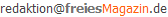

freiesMagazin November 2011 (ISSN 1867-7991)
Topthemen dieser Ausgabe
Ren'Py als Entwicklertool für 2-D-Spiele
Textadventures waren lange Zeit auch in Deutschland sehr populär. Ihre Hochzeit hatten sie vielleicht in den 80er/90er Jahren, doch mit der Neuartigkeit der 3-D-Shooter verschwanden sie beinahe ganz. Hierzulande! In Japan machte Mitte des letzten Jahrzehnts eine eigene Art von Textadventures einen Großteil des Spielemarktes aus. Bei Ren'Py handelt es sich um ein plattformübergreifendes Open-Source-Software-Entwicklungskit (SDK), das seine Ursprünge in der Bewunderung für diese japanischen Spiele hat. (weiterlesen)
Kurzreview: Humble Voxatron Debut
Nachdem Ende Juli/Anfang August das dritte Humble Indie Bundle ins Rennen ging, veröffentlichten die Humble-Macher Ende September/Anfang Oktober bereits das nächste Bundle namens Humble Frozen Synapse Bundle. Und nicht einmal einen Monat danach erschien das „Humble Voxatron Debut“, dessen Inhalt in diesem Artikel kurz vorgestellt werden soll. (weiterlesen)
Bericht von der Ubucon 2011
Das fünfte Jahr Ubucon und das zweite Jahr in Leipzig. Das Fazit der Besucher vorab: Es hat extrem viel Spaß gemacht, neue und vor allem alte Gesichter wiederzusehen und die Zeit gemeinsam zu verbringen. Viele Vorträge, Workshops und Diskussionsrunden sorgten bei den circa 200 Teilnehmern für reges Interesse und vor allem bei den Social Events am Abend konnte man sich gut austauschen. (weiterlesen)
Zum Index
Inhalt
Linux allgemein
Ubuntu und Kubuntu 11.10
Erweitertes RC-System von OpenBSD
Der Oktober im Kernelrückblick
Anleitungen
Perl-Tutorium: Teil 3
PHP-Programmierung – Teil 2
Software
Pixelfreie Screenshots
Ren'Py als Entwicklertool für 2-D-Spiele
Kurzreview: Humble Voxatron Debut
Community
Bericht von der Ubucon 2011
Freie Software in der Schule
Rezension: Android 3
Rezension: Canvas – kurz & gut
Rezension: NetBeans Platform 7
Magazin
Editorial
Veranstaltungen
Vorschau
Konventionen
Impressum
Zum Index
Editorial
Korrektur zum Paketabhängigkeiten-Artikel
Auf den Artikel „Die Nachteile der Paketabhängigkeiten“ aus freiesMagazin 10/2011 [1] gab es einige Reaktionen. Eine davon [2] korrigierte auch eine Aussage von Dominik Wagenführ, dass die Installation der Qt-Pakete aufgrund der Versionsabhängigkeit stattfindet. Diese Aussage im Artikel ist falsch und soll hiermit korrigiert werden. Die Paketabhängigkeiten entstehen, weil in Ubuntu/Debian die Qt-Binärpakete aus einem einzigen Quellpaket erzeugt werden. Wenn in dem Quellpaket ein Fehler gefunden und korrigiert wird, müssen auch alle Binärpakete neu erstellt werden. Wir entschuldigen uns bei allen Lesern, dass dieser Fehler unterlaufen ist.Zwischenstand zum vierten Programmierwettbewerb
Der vierte freiesMagazin-Programmierwettbewerb läuft nun bereits etwas über einen Monat [3]. Es gab bereits zahlreiche Kommentare und Anfragen von Lesern, die Interesse an einer Teilnahme bekunden. Es gibt sogar schon drei Einsendungen zum Wettbewerb. Die Fragen der Teilnehmer wurden in eine FAQ zusammengefasst und an die Wettbewerbsseite angehängt [4]. Wir möchten an dieser Stelle noch einmal darauf hinweisen, dass es sinnvoll ist, nicht bis zur letzten Sekunde mit der Einsendung zu warten. Korrekturen an den Bots sind bis zum Einsendeschluss am 30. November 2011 jederzeit möglich.Perl ist wieder da
Im letzten Monat fragte ein Leser auch nach, wo denn der nächste Teil des Perl-Tutoriums bleibt [5]. Uns und den Autor freut natürlich die Nachfrage und diesen Monat geht die Reihe auch weiter. Aus zeittechnischen Gründen können wir aber nicht garantieren, dass bei Serien-Artikeln wirklich jeden Monat immer ein Artikel erscheint. Und nun wünschen wir Ihnen viel Spaß mit der neuen Ausgabe. Ihre freiesMagazin-Redaktion Links[1] http://www.freiesmagazin.de/freiesMagazin-2011-10
[2] http://www.freiesmagazin.de/20111002-oktoberausgabe-erschienen#comment-2141
[3] http://www.freiesmagazin.de/20111001-vierter-freiesmagazin-programmierwettbewerb-gestartet
[4] http://www.freiesmagazin.de/vierter_programmierwettbewerb#faq
[5] http://www.freiesmagazin.de/20111002-oktoberausgabe-erschienen#comment-2136
Das Editorial kommentieren
Zum Index
Ubuntu und Kubuntu 11.10
von Hans-Joachim Baader Mit neuen Varianten, erweitertem Softwareangebot und verbesserten Diensten schickt sich Ubuntu an, die Gemeinschaft noch besser als bisher zu bedienen. Eine verbesserte Paketverwaltung und aktualisierte Desktops wurden nebenbei noch mitgenommen. Redaktioneller Hinweis: Der Artikel „Ubuntu und Kubuntu 11.10“ erschien erstmals bei Pro-Linux [1].Vorwort
Planmäßig wie jedes halbe Jahr erschien die neue Version 11.10 „Oneiric Ocelot“ der Linux-Distribution Ubuntu. Neben zahlreichen Neuerungen auf dem Desktop, darunter eine verbesserte Version von Unity und das neue KDE SC 4.7.1, bringt Ubuntu 11.10 auch Installations-Images für die ARM-Systeme Netbook Toshiba ac100 [2] und Freescale i.MX53 [3]. Ubuntu Server enthält jetzt wieder den Hypervisor Xen, aber auch Unterstützung für Linux-Container (LXC). Enthalten ist auch Orchestra, eine Sammlung der besten freien Software-Dienste, um die Infrastruktur in Rechenzentren zu verwalten. Ferner wurde Juju, das unter dem Namen Ensemble entwickelt wurde, integriert, ein Werkzeug, um die Verteilung und Verwaltung von Diensten auf Cloud- und normalen Servern zu ermöglichen. Auch vom Server gibt es eine ARM-Variante. Und dann gibt es noch die neue Variante Lubuntu, die den LXDE-Desktop als Standard installiert.
Erneuertes Unity: Übersichtsseite mit Linsen.
Wie ihr Vorgänger Ubuntu 11.04 (siehe freiesMagazin06/2011 [4]) ist die neue Version keine Version mit längerfristigem Support. Sie wird in allen Varianten 18 Monate mit Sicherheits- und anderen wichtigen Updates versorgt. Ein Update ohne Neuinstallation von der Version 11.04 wird offiziell unterstützt. Dieser Artikel wird sich auf die Desktopumgebungen Unity und KDE beschränken. Aus praktischen Gründen sind auch andere Einschränkungen nötig. So wurden natürlich zahlreiche zur Distribution gehörende Softwarepakete geändert oder ersetzt. Mit wenigen Ausnahmen kann auf diese Änderungen nicht eingegangen werden; man darf annehmen, dass die meisten Pakete unter allen aktuellen Distributionen nahezu gleich sind und überall gleich gut funktionieren. Wie immer sei angemerkt, dass es sich hier nicht um einen Test der Hardwarekompatibilität handelt. Es ist bekannt, dass Linux mehr Hardware unterstützt als jedes andere Betriebssystem, und das überwiegend bereits im Standard-Lieferumfang. Ein Test spezifischer Hardware wäre zu viel Aufwand für wenig Nutzen. Falls man auf Probleme mit der Hardware stößt, stehen die Webseiten von Ubuntu zur Lösung bereit. Da eine Erprobung auf realer Hardware nicht das Ziel des Artikels ist, werden für den Artikel zwei identische virtuelle Maschinen, 64 Bit, unter KVM mit jeweils 768 MB RAM verwendet.
Begrüßungsbildschirm der Kubuntu-DVD.
Installation
Ubuntu wird meist von einem Live-System aus, das als CD und umfangreichere DVD verfügbar ist, installiert. Ferner ist eine Installation von der Alternate-CD, möglich, die im Textmodus läuft, aber wesentlich mehr Flexibilität als die grafische Installation besitzt. Für Ubuntu 11.10 werden 384 MB RAM für den Unity-Desktop als Mindestanforderung angegeben. Mit 512 MB und mehr läuft das System allerdings wesentlich besser. Kubuntu ist aufgrund des größeren Speicherbedarfs von KDE unter 512 MB RAM fast nicht zu benutzen – aber wer den Rechner intensiv nutzt, sollte bei den heutigen Speicherpreisen lieber gleich in 4 GB RAM (oder mehr, je nach Bedarf) und ein 64-Bit-System investieren, so dass reichlich Platz für die Anwendungen ist. Xubuntu und die Server-Edition sollten weiterhin mit 128 MB auskommen. Hier soll nur die Installation von der Desktop-DVD kurz vorgestellt werden. Wer den Logical Volume Manager (LVM) verwenden will, muss zur textbasierten Installation von der DVD oder der Alternate-CD wechseln, da diese Möglichkeit im grafischen Installer nach wie vor fehlt. Die Alternate-Installation läuft ansonsten fast genauso ab wie die grafische Installation. Durch Boot-Optionen steht aber eine erweiterte Installation zur Verfügung, mit der man weitgehende Kontrolle über den ganzen Vorgang hat. Auch die Option, die gesamte Festplatte zu verschlüsseln, was auf Laptops zu empfehlen ist, gibt es nur auf der Alternate-CD.Ubuntu installiert sich.
Die Installation unterlag nur wenigen Änderungen gegenüber der letzten Version. So kann ein bereits installiertes Ubuntu-System vom Desktop-Installer aus aktualisiert oder neu installiert werden, wenn eine Internet-Verbindung vorhanden ist. Ist die vorherige Installation bereits Ubuntu 11.10, kann das allerdings zu kuriosen Vorschlägen wie „Ubuntu 11.10 auf Ubuntu 11.10 aktualisieren“ führen. Standardmäßig wird nur eine einzige Partition plus Swap angelegt. Will man mehr Flexibilität, muss man „Etwas anderes“ auswählen, wodurch das Partitionierungswerkzeug gestartet wird. Dort kann unter anderem das Dateisystem Btrfs ausgewählt werden, das nun dank signifikanter Verbesserungen ohne Einschränkungen nutzbar sein soll, abgesehen davon, dass es noch kein fsck-Tool gibt. Der Einhängepunkt einer Partition kann nun wieder frei eingegeben werden, aber man kann auch aus der Vorgabe einen auswählen. Direkt nach der Definition der Partitionen beginnt der Installer mit der Partitionierung und der Installation der Pakete im Hintergrund. Ein Fortschrittsbalken zeigt von hier an den Stand der Installation an. Parallel dazu kann man die Zeitzone auswählen und danach das gewünschte Tastatur-Layout einstellen. Die Neuerung von Fedora 15, die die Auswahl der Zeitzone mit der Maus einfacher macht, indem bei einem Klick auf eine Region diese automatisch herangezoomt und die nächstgelegene Stadt gewählt wird, ist bei Ubuntu leider noch nicht zu finden. Im letzten Schritt gibt man seinen Namen, Anmeldenamen, Passwort und den Computernamen ein. Wenn zuvor bereits per DHCP ein Name ermittelt werden konnte, wird dieser als Vorgabe angezeigt. Wenn erkannt wird, dass die Installation in einer virtuellen Maschine läuft, wird dagegen der Name benutzer-virtual-machine vorgegeben. Optional können Daten im Home-Verzeichnis verschlüsselt werden. Während man das Ende der Installation abwartet, kann man nun noch einige Tipps zu Ubuntu ansehen.
Auswahl der Partitionierungsmethode.
Ausstattung
Sowohl Ubuntu als auch Kubuntu starten schnell, mindestens genauso schnell wie in der Vorversion. Sofern kein automatisches Login konfiguriert wurde, muss man sich anmelden, was unter Ubuntu jetzt mit LightDM, der gdm ersetzte, unter Kubuntu weiter mit kdm geschieht. Danach wird der vollständige Desktop zügig aufgebaut. Der verwendete Kernel beruht auf Linux 3.0.4. Damit soll eine höhere Geschwindigkeit des Dateisystems ext4 ebenso einhergehen wie eine verbesserte Interaktivität. Das System unterstützt jetzt Multiarch, das heißt, dass auf einem 64-Bit-System 32-Bit-Programme installiert werden können und auch sofort lauffähig sein sollten – früher musste man dafür mitunter mühsam nach den benötigten 32-Bit-Bibliotheken suchen und spezielle Kompatibilitätspakete installieren. Der X-Server 1.10.1 und Mesa 7.10.2 bilden die Basis für die grafische Oberfläche einschließlich der 3-D-Beschleunigung. Wie gewohnt hat Root keinen direkten Zugang zum System. Zugang zum Root-Account ist aber über das Kommando sudo vorhanden. Damit kann man jeden beliebigen Befehl ausführen, nachdem man sein eigenes Passwort eingegeben hat. Wenn man, nachdem man als Root eingeloggt ist, ein Passwort vergibt, ist auch das direkte Einloggen als Root möglich. Unity benötigt direkt nach dem Start mit einem geöffneten Terminal-Fenster etwa 320 MB RAM, KDE etwa 430 MB. Wer der Meinung ist, auf Nepomuk und Desktopsuche in KDE verzichten zu können, kann diese abschalten, wird dadurch aber fast nichts einsparen. Bei der Geschwindigkeit lässt sich kein nennenswerter Unterschied zwischen den Desktops feststellen, sofern genug RAM vorhanden ist. Für KDE bedeutet das, dass man mindestens 768 MB RAM haben sollte. Den Speicherverbrauch der Desktops zu messen ist nicht einfach. Schwankungen von 20 MB und mehr nach oben und unten sind möglich, je nach dem Zeitpunkt der Messung. Dies erklärt sich teilweise daraus, dass manche Programme bei ihrem Start einen oder mehrere Dienste starten. Diese Dienste werden bei Nichtbenutzung teilweise nach einiger Zeit auch wieder beendet. So sind die Angaben zum Speicherverbrauch nur als Anhaltswerte zu sehen, die sich je nach Hardware erheblich unterscheiden können.Der Login-Bildschirm von LightDM.
Unity
Unity, in der Vorversion erstmals weit verbreitet eingesetzt, wurde massiv überarbeitet. Erst einmal wurde Unity auf GTK 3 portiert und nutzt nun Komponenten von GNOME3 und keine mehr von GNOME2. Das eigentliche Unity setzt eine Hardwarebeschleunigung der 3-D-Grafik voraus und nutzt den Compositing-Manager Compiz. Steht keine Hardwarebeschleunigung zur Verfügung, wird automatisch Unity 2D genutzt, das nun kaum mehr vom normalen Unity zu unterscheiden ist, außer dass weniger Grafikeffekte genutzt werden. Einen Fallback-Modus gibt es nun nicht mehr. Unity 2D ist allerdings mit Qt implementiert und dürfte sich damit intern erheblich von Unity unterscheiden, auch wenn es funktional angeglichen wurde. Die augenfälligste Änderung in Unity ist, dass der Ubuntu-Button vom Panel in den Starter wechselte und nun dessen oberstes Element darstellt. Unity ist jetzt etwas mehr konfigurierbar. Allerdings kann von einer konsequenten und konsistenten Konfigurierbarkeit, wie sie bei KDE gegeben ist, noch keine Rede sein. Vieles wird über Compiz konfiguriert. Dazu muss man CompizConfig nachinstallieren. Einige wenige andere Optionen halten die GNOME3-Systemeinstellungen bereit. Für noch mehr Konfigurierbarkeit sollte man auch dconf-tools installieren. Doch auch die Gemeinschaft war nicht untätig. Weitere Anpassungen von Unity sind möglich. Wem zum Beispiel das von den Anwendungen getrennte und in das Panel verlegte Anwendungsmenü nicht zusagt, der kann das Paket indicator-appmenu entfernen, damit ist das alte Verhalten wieder vorhanden. Weitere Eingriffsmöglichkeiten bieten die Indikator-Applets. Indikator-Applets sind die von Ubuntu entwickelte Ablösung der GNOME-Panel-Applets, die in Unity nicht mehr funktionieren. Es gibt inzwischen eine ganze Reihe von Indikator-Applets [5], die die Funktion der alten Applets übernommen haben. Sie werden überwiegend über die Paketverwaltung installiert, wofür man aber zum Teil private Paketrepositories einbinden muss. Eines dieser Applets stellt sogar das alte GNOME-Menü wieder her. Apropos Indikatoren – diese wurden von den Entwicklern ein wenig überarbeitet, der Sitzungsindikator wurde neu gegliedert und der Energierstatus-Indikator, sofern er benötigt wird, von den anderen separiert. Das Wechseln der Fenster mittels „Alt“ + „Tab“ wurde neu implementiert. Es erscheint nun ein kleines Fenster in der Mitte des Bildschirms, das erstens den Titel der Fenster anzeigt, zweitens die Position des aktuellen Zielfensters als dünnen Rahmen anzeigt und drittens nur innerhalb der aktuellen Arbeitsfläche wechselt. Die dünnen Rahmen sind allerdings vor manchen Hintergründen nicht zu sehen.Der Starter überlagert das GIMP-Fenster.
Der Starter ist immer sichtbar, außer wenn ein anderes Programm den Platz beansprucht. Dann fährt er links aus dem Bildschirm heraus – theoretisch. Startet man GIMP, stellt man fest, dass sich dessen Mehrfenster-Modus nicht mit dem Starter verträgt: Das Tool-Fenster wird unter den Starter gelegt. Möglicherweise existiert das Problem aber auch nur in Unity 2D. Die bisherigen „Orte“ in Unity wurden durch „Linsen“ ersetzt. Klickt man das Ubuntu-Icon, so erscheint die Schnellauswahl (Dash), in der man installierte Programme suchen und mit den neuen Linsen nach verschiedenen Kriterien filtern kann. Außer Programmen kann man auch Dateien suchen, wobei man schnell auf die zuletzt benutzten zugreifen kann, und Musik, wobei auch Angebote aus dem Music Store eingeblendet werden. Letzteres ist mit der Musikverwaltung Banshee verknüpft. Unity mag in gewisser Weise frischen Wind auf den Desktop bringen, aber es leidet immer noch unter zahlreichen Unzulänglichkeiten. Binnen weniger Minuten konnte ich mühelos meherere davon finden.
- Anwendungen haben normalerweise ein Kontextmenü in der Titelleiste, mit dem man sie z. B. auf eine andere Arbeitsfläche verschieben kann. Ist das Fenster der Anwendung maximiert, ist dieses Menü nicht mehr aufrufbar, zumindest mit der Maus nicht.
- Hat man im Hintergrund ein maximiertes Fenster und im Vordergrund ein kleineres Fenster, so gibt es keine Möglichkeit, das Fenster im Hintergrund zu minimieren. Man muss es erst in den Vordergrund holen, damit der Minimieren-Button erscheint.
- Bei der Definition der Tastenkürzel kann man jeder Aktion nur höchstens eine Tastenkombination zuweisen. Warum nicht mehrere? Das ist allerdings ein GNOME-Problem, weniger eines von Unity.
Startseite des Software Centers.
Das Software Center, das Hauptwerkzeug zur Installation und Verwaltung von Paketen, nicht jedoch zum Einspielen von Updates, wurde gründlich überarbeitet. In Version 5.0 wurde der Navigationsbaum durch eine Werkzeugleiste ersetzt. Ein Werbebanner sowie neue und die bestbewerteten Anwendungen füllen das Fenster der Anwendung aus. Von hier kann man dann zu den Paketen navigieren, den Bestand durchsuchen oder in den Kategorien blättern. Man kann, wie bei vielen Shopping-Seiten, bewerten, Rezensionen ansehen und eigene schreiben (sofern man das Programm installiert hat). Proprietäre Programme kann man direkt einkaufen. Um diese Funktionen zu nutzen, muss man ein Konto beim Ubuntu Software Center haben, das vermutlich auch für Ubuntu One dient. Bei der Installation hat man nun die Möglichkeit, das neue Programm gleich zum Starter hinzuzufügen. Interessant ist auch die Möglichkeit, die Liste der installierten Anwendungen zwischen Rechnern zu synchronisieren. Um diese neue Funktion OneConf [6] nutzen zu können, muss man aber ebenfalls ein Online-Konto haben. Die Bedienung des Software Centers, das übrigens Freie Software ist, weist allerdings einige Probleme auf. So kann man die Versionsnummer eines Programmes in den Übersichten nicht sehen. Die Kategorien unter den installierten Paketen sehen anders aus als unter „alle Anwendungen“ und zum Aufklappen steht nur winziger Pfeil (oder „+“ und „-“) zur Verfügung. Will man mehr als ein Paket installieren, muss man jedes einzeln bearbeiten; es gibt keine Möglichkeit der Markierung, um Aktionen auf mehrere Pakete anzuwenden. Immerhin kann man mehrere Aktionen starten, ohne auf die Beendigung der vorigen warten zu müssen. Das Repository oneiric-backports ist nun standardmäßig aktiviert. Aktuell besitzt das noch keine Relevanz, da es noch nahezu leer ist, später sollen darin aber aktualisierte Versionen von Programmen erscheinen, die man optional installieren kann. Damit sollen es die Benutzer noch leichter haben, auf aktuelle Programme zuzugreifen. Für diese gibt es aber von Ubuntu keine Updates und keinen Support, die Installation erfolgt auf eigenes Risiko.
KDE (SC)
In Kubuntu wurde KDE SC auf die Version 4.7.1 (inzwischen durch ein Update auf 4.7.2) aktualisiert, einschließlich der neuen Version 4.7.2 von KDE-PIM, der Suite zur Verwaltung von E-Mails, Kontakten, Terminen usw. In dieser Version hat KDE die bisher vielleicht nicht ausreichend intuitiven Aktivitäten überarbeitet. Ob dies gelungen ist, ist noch fraglich. Ich denke eher, dass man einige Zeit mit Ausprobieren oder Suchen nach Dokumentation verbringen muss. Standardmäßig sind bei Kubuntu bereits drei Aktivitäten definiert: „Desktop Icons“, die Standard-Aktivität mit völlig verfehltem Namen, „Photos Activity“ und „Search and Launch“. Die beiden letzteren sind nicht aktiviert und dienen vielleicht nur als Beispiele. Denn wenn man sie startet, erhält man Fehlermeldungen, da sie Anwendungen starten wollen, die nicht installiert sind. Der Dateimanager Dolphin besitzt standardmäßig keine Menüleiste mehr, sondern minimiert sie ähnlich den Browsern Opera, Firefox oder Chrome. Anwender, die das alte Verhalten nutzen wollen, können es mühelos wieder reaktivieren. Der Standard-Browser ist Rekonq, jetzt in Version 0.7.90. Erwähnenswert ist dabei nur, dass man besser Firefox nutzt, den Rekonq besitzt keine Plug-ins und keine der fortgeschrittenen Funktionen von Firefox.Anlegen eines Benutzers.
Kubuntu hat an alle Benutzer gedacht, die die Leistung ihres KDE maximieren wollen, und bietet ein Paket kubuntu-low-fat-settings, das einige Dienste entfernt und somit Speicher spart. Außerdem kann man mittels des experimentellen Pakets kde-window-manager-gles eine Anpassung von KWin an OpenGL ES ausprobieren. OpenGL ES stellt wie OpenGL 3-D-Hardwarebeschleunigung für die Effekte von KWin bereit, soll aber, da es sich um eine Untermenge handelt, kompatibler sein. Das Abmelden von KDE und das Herunterfahren des Rechners funktionierten in mehreren Fällen nicht. Der größte Stromverbraucher im System ist immer noch knotify4, dem leider immer noch kein vernünftiges Verhalten beigebracht wurde. Dieses Programm allein sorgt mit seinen permanenten und unnötigen Aktionen für 2 % CPU-Grundlast. Es scheint eine Regel zu geben, dass alles, was endlich einmal recht gut funktioniert, durch etwas anderes ersetzt werden muss. So wurde die Paketverwaltung KPackageKit durch Muon ersetzt. Langfristig soll dieses Programm wohl die gleichen Funktionen erhalten wie das Software Center, beispielsweise mit den jetzt schon vorhandenen Bewertungen und Rezensionen. Warum aber wird dann nicht gleich Software Center verwendet, das schon um einiges weiter ist? Davon abgesehen ist Muon aber schon ein ziemlich komplettes Programm, das alles kann außer Updates. Für die Updates steht ein separates Programm „Muon-Aktualisierungsverwaltung“ zur Verfügung.
Laufende Installation in Muon.
Firefox ist jetzt in Version 7.0.1 enthalten. Mehrere Plug-ins zum Abspielen von Videos in freien Formaten sind vorinstalliert. Die vorinstallierte Erweiterung „Ubuntu Firefox Modifications“ hat Version 1.0 erreicht. Darin ist der bereits bekannte Plugin-Finder-Service enthalten. Will man beispielsweise ein Video in einer Webseite abspielen, sollten sich komfortabel passende Plug-ins finden und installieren lassen. Das funktionierte im Test in keinem Fall, was aber auch in der letzten Version schon so war. Flash ist wiederum ein anderes Thema. Standardmäßig ist kein Flash-Player vorinstalliert. Mit den freien Flash-Implementierungen Gnash und Lightspark lief nicht alles so gut wie beim letzten Mal, denn kaum ein Video wollte mit Gnash funktionieren. Erst mit der Installation des Adobe-Flash-Plugins, das in Version 11 auch in 64 Bit zur Verfügung steht und sich dank eines Ubuntu-Pakets genauso einfach installieren lässt wie andere Software, funktionierten alle Videos. Die Alternative zu Flash, das WebM-Format, sollte in Firefox seit Version 4 kaum Probleme bereiten, und im Großen und Ganzen scheint es zu funktionieren. Mit einzelnen Webseiten kann es noch Probleme geben, was aber nicht genauer untersucht wurde. In den bekannten Anwendungen Banshee und Totem sollte bei standardmäßig nicht unterstützten Formaten eine Dialogbox erscheinen, die eine Suche nach passenden GStreamer-Plug-ins ermöglicht und sie installiert. Wenn Ubuntu mehr als ein Paket findet, das geeignet ist, kann man auswählen, welches installiert werden soll. Beim MP3-Format sind das beispielsweise ein Fluendo-Plug-in und eine GStreamer-Plug-in-Sammlung. Bei der Auswahl von letzterer lassen sich trotzdem keine MP3-Dateien abspielen. Eine manuelle Installation weiterer GStreamer-Pakete ist nötig. Banshee muss nach der Installation neuer Codecs neu gestartet werden, damit es funktioniert. Nach wie vor versagt der Mechanismus bei einigen Videodateien in Totem, auch hier war eine manuelle Installation nötig. Unter KDE ist Amarok, jetzt in Version 2.4.3, der Standard-Audioplayer. Beim ersten Abspielen einer MP3-Datei erkennt Amarok, dass ein Plug-in fehlt, startet die Paketverwaltung, um danach zu suchen, und installiert auch eine ganze Reihe von Modulen. Nur abspielen kann man danach immer noch nichts. Ähnlich ist es im Standard-Videoplayer Dragonplayer. Letztlich mussten die fehlenden GStreamer-Module über die Paketverwaltung installiert werden. In der Vorversion klappte das alles automatisch. Im Dateimanager Dolphin fehlt weiterhin eine Dateizuordnung von Dateien mit dem Suffix .flv. Wenn man diese mit „Öffnen mit …“ hinzufügt, kann man beispielsweise „/usr/bin/dragon“ als Programm eintragen, dann läuft alles rund. Insgesamt ist die Multimedia-Integration sowohl in GNOME/Unity als auch in KDE fehlerhaft und ein unerwarteter Rückschritt gegenüber der Version 11.04.
Startseite von Firefox.
Fazit
Man könnte Ubuntu und Kubuntu angesichts der zahlreichen bemerkten Probleme leicht als Distribution mit vielen schlechten Eigenschaften beklagen. Doch das hieße, die Fehler stark überzubewerten. Eines soll an dieser Stelle noch einmal betont werden: Man sollte die Aussage von Mark Shuttleworth, dass der Ubuntu-Entwicklungszyklus zwei Jahre lang ist, ernst nehmen. Das bedeutet, dass alles, was zwischen zwei LTS-Versionen erscheint, in Entwicklung befindliche und unfertige Elemente enthält. Besonders sieht man das natürlich an Unity. Das heißt zwar nicht, dass Unity unbenutzbar ist, aber Benutzer, die weniger Experimente (und das klassische GNOME) wollen, sollten lieber bei Ubuntu 10.04 LTS bleiben. Unity schreitet ganz klar voran, aber man muss die vorhandenen Konfigurationsmöglichkeiten nutzen, um so manchen Mangel und manches Ärgernis zu beseitigen. Eine recht weitgehende Anpassung von Unity ist zwar möglich, aber nicht konsistent, und man muss an verschiedenen Stellen ansetzen. Für jemanden, der Unity nicht will, ist es aber nicht schwer, zur GNOME-Shell oder zum klassischen Desktop von GNOME3 zu wechseln. Für Kubuntu bleibt festzuhalten, dass es an KDE generell nicht viel auszusetzen gibt, an der Implementation in Kubuntu schon mehr. Doch auch hier handelt es sich um Kleinigkeiten, die man schnell in den Griff bekommt. Die vorinstallierte Paketauswahl wird wohl auch nicht jedem gefallen, doch dafür gibt es die Paketverwaltung. Unter den festgestellten Problemen von Ubuntu und Kubuntu 11.10 sind ärgerlicherweise Dinge, die früher einmal besser funktionierten. Allerdings sind es überwiegend Probleme mit der anfänglichen Konfiguration. Sie erfordern etwas Handarbeit, machen die Distribution aber nicht prinzipiell schlecht. Denn hat man das System erst einmal konfiguriert, ist es ein bewährtes System, auf das man sich hundertprozentig verlassen kann. Man darf schon jetzt auf die im April 2012 erscheinende Version 12.04 LTS gespannt sein, die für volle fünf Jahre unterstützt wird. Links[1] http://www.pro-linux.de/artikel/2/1534/ubuntu-und-kubuntu-1110.html
[2] https://wiki.ubuntu.com/ARM/TEGRA/AC100
[3] https://wiki.ubuntu.com/ARM/MX5
[4] http://www.freiesmagazin.de/freiesMagazin-2011-06
[5] http://wiki.ubuntuusers.de/Unity/FAQ
[6] https://wiki.ubuntu.com/OneConf
| Autoreninformation |
| Hans-Joachim Baader (Webseite) befasst sich seit 1993 mit Linux. 1994 schloss er sein Informatikstudium erfolgreich ab, machte die Softwareentwicklung zum Beruf und ist einer der Betreiber von Pro-Linux.de. |
Zum Index
Erweitertes RC-System von OpenBSD
von Patrick Hemmen Das erweiterte RC-System von OpenBSD erleichtert die Integration von Programmen aus dem Package/Ports-System in den Systemstart. Zudem wird die Konfiguration vereinfacht und übersichtlicher. Nachdem der Computer eingeschaltet wird, startet das BIOS und initialisiert die Systemkomponenten, die für den Systemstart benötigt werden. Vom BIOS wird aus dem Master Boot Record (MBR) der Urlader gestartet. Unter Linux kommt häufig Grub [1] als Urlader zum Einsatz, unter OpenBSD wird boot [2] eingesetzt. Dieser Urlader lädt den Kernel von der Festplatte. Unter Linux kann eine initrd [3] vom Kernel geladen werden, die ein minimales Root-Dateisystem für die Einbindung von Treibern bereitstellt. Diese Technik wird von OpenBSD nicht verwendet, da bereits alle Treiber im Kernel enthalten sind. Nachdem der Kernel geladen wurde, wird ein Prozess gestartet, welcher den weiteren Startvorgang verwaltet.Startsysteme
Dieser Vorgang ist bei allen unixartigen Systemen ähnlich. In Linux-Systemen wird häufig Init in der Variante Sysinit [4] verwendet, dieses wird aber immer häufiger durch systemd [5] von Red Hat ersetzt. Solaris setzt seit Version 10 die Service Management Facility [6] ein, Mac OS X benutzt launchd [7]. Bei BSD-Systemen wird von dem Init-Prozess das Shell-Skript /etc/rc ausgeführt, von dem der Start weiterer Prozesse kontrolliert wird. Dieses System ist simpel, es kennt z. B. keine Runlevels. Soll aber ein weiterer Prozess beim Systemstart aktiviert werden, muss das Skript manuell angepasst werden. Fehler in dieser Datei können dazu führen, dass das System nicht mehr ordnungsgemäß starten kann. Das Skript /etc/rc.local dient als Erweiterung des Hauptskripts /etc/rc. Nachdem das Hauptskript die wichtigsten Systemprozesse gestartet hat, wird /etc/rc.local ausgeführt. Weiterhin wurde das System noch um Konfigurationsdateien ergänzt (/etc/rc.conf und /etc/rc.conf.local). Im Internet existieren mehrere Theorien für was RC die Abkürzung ist. Die nach meiner Meinung plausibelsten sind die des „The Art of Unix Programming“, nach dem RC als Run-Control [8] interpretiert wird, und die Erläuterung im Jargon File, wo RC als runcom [9] beschrieben wird.Dedizierte Skripte
NetBSD hat sein RC-System [10] schon mit Version 1.5 um dedizierte Skripte für installierte Dienste ergänzt. Mit dieser Ergänzung werden Startskripte für jeden Dienst unterhalb von /etc/rc.d/ abgelegt. Dies vereinfacht die Handhabung bei einer großen Anzahl von Diensten, die beim Systemstart aktiviert werden sollen, und bietet die Möglichkeit, die Dienste über ihr Skript während des Betriebs zu steuern. FreeBSD hat bereits in Version 5.0 dieses Konzept übernommen [11]. OpenBSD hat bis zur Version 4.9 das alte System aus zwei RC-Skripts verwendet. Zur leichteren Integration von Programmen in den Systemstart, die aus dem OpenBSD Package/Ports-System [12] stammen, wurde eine erweiterte Version, die dedizierte Skripts unterstützt, in OpenBSD 4.9 integriert [13].Übersicht des Startvorgangs von OpenBSD.
Der Kernel startet den Init-Prozess und dieser führt das Skript /etc/rc aus. Dieses Skript liest seine Konfigurationsdatei und startet mit dem neuen Subsystem /etc/rc.d/ Dienste. Anschließend wird das Skript /etc/rc.local ausgeführt, welches ebenfalls seine Konfiguration einliest und Dienste über das neue Subsystem startet.
Konfiguration
Die Erweiterung des RC-System ist noch in einer sehr aktiven Phase der Entwicklung. Daher wurde nachfolgende Beschreibung mit dem Snapshot vom 22.09.2011 des letztendlich Anfang November erschienenen OpenBSD 5.0 erstellt.| Übersicht über Startskripte | |
| /etc/netstart | Skript zur Netzwerkkonfiguration |
| /etc/rc | Hauptskript zum Start des Systems |
| /etc/rc.conf | Konfigurationsdatei für Dienste |
| /etc/rc.conf.local | Lokale Konfigurationsdatei für Dienste |
| /etc/rc.d | Verzeichnis für Startskripte |
| /etc/rc.d/rc.subr | Frameworkdatei für Startskripe |
| /etc/rc.firsttime | Skript, das beim ersten Systemstart ausgeführt wird |
| /etc/rc.local | Lokales Skript zur Anpassung des Systemstarts |
| /etc/rc.securelevel | Enthält Befehle, die vor dem Setzen des Sicherheitslevel ausgeführt werden |
| /etc/rc.shutdown | Skript, das beim Herunterfahren ausgeführt wird |
| /fastboot | Wenn diese Datei existiert, wird keine Festplattenüberprüfung beim Neustart ausgeführt |
# /etc/rc.d/sshd restartDies funktioniert nur, wenn der Dienst in /etc/rc.conf.local aktiviert wurde. Ist dies nicht der Fall, muss beim Aufruf die Option -f übergeben werden. Die Option ermöglicht einen Start, ohne dass der Dienst aktiviert sein muss. Mit der Option -d (Debug) werden Fehlermeldungen beim Start ausgegeben. In der Datei /etc/rc.d/rc.subr ist ein Framework implementiert, das die Arbeit der Port-Maintainer erleichtert. Das Framework bietet Aufrufe für start, stop, restart, reload und check eines Dienstes, sodass nicht jeder Maintainer eigene Routinen für diese Standardaufrufe entwickeln muss. Das Skript für einen Dienst beschränkt sich daher häufig auf die Einbindung der Frameworkdatei und das Setzen von Variablen. Wird ein Dienst aus dem Package/Ports-System von OpenBSD installiert, wird nicht, wie in früheren Versionen von OpenBSD, eine Empfehlung für einen Eintrag in der /etc/rc.conf.local angezeigt, sondern ein Skript mit dem Namen des Dienstes in /etc/rc.d/ abgelegt. Ob ein Skript angelegt wurde, sollte zum jetzigen Zeitpunkt noch überprüft werden, da noch nicht alle Ports auf das erweiterte System umgestellt wurden. Zur Konfiguration eines einzelnen Dienstes können in der Datei /etc/rc.conf.local die Variable <daemon>_flag zur Übergabe von Argumenten an den Dienst und mit der Variable <daemon>_user der Benutzer bestimmt werden, mit dem der Dienst ausgeführt wird. Dabei muss <daemon> durch den zu konfigurierenden Dienst ersetzt werden. Als Beispiel soll der Proxy-Server squid als Benutzer squid ausgeführt werden. Dafür muss als Konfigurationsvariable squid_user=squid verwendet werden. Ein Dienst wird bei dem Systemstart automatisch ausgeführt, wenn der Name des Dienstes (identisch mit dem Skript) in der Variable pkg_scripts in der Datei /etc/rc.conf.local hinterlegt wird. Mehrere Dienste werden mit einem Leerzeichen getrennt und in der angegebenen Reihenfolge gestartet. Folgendes Beispiel startet den Proxy-Server squid und anschließend den IMAP/POP3-Server Dovecot:
# Datei /etc/rc.conf.local pkg_scripts="squid dovecot"Die Dienste werden beim Herunterfahren in der umgekehrten Reihenfolge vom Skript /etc/rc.shutdown beendet. Dienste aus OpenBSD Base werden weiterhin über dedizierte Konfigurationsvariablen in /etc/rc.conf.local konfiguriert; ein Eintrag in pkg_scripts ist nicht nötig. Der Start erfolgt aber auch hier mit den Startskripten, welche vom Skript /etc/rc gesteuert werden.
Upgrade
Bei der Aktualisierung eines bestehenden Systems auf OpenBSD 4.9 oder neuer ist es nicht zwingend notwendig, eine Migration zu den rc.d-Skripten durchzuführen. Die vorhandene Konfiguration in der Datei /etc/rc.conf.local bleibt weiterhin funktionstüchtig. Links[1] http://www.gnu.org/software/grub/
[2] http://www.openbsd.org/cgi-bin/man.cgi?query=boot
[3] http://de.wikipedia.org/wiki/Initrd
[4] http://www.openbsd.org/cgi-bin/man.cgi?query=authpf
[5] http://freedesktop.org/wiki/Software/systemd
[6] http://download.oracle.com/docs/cd/E19963-01/html/821-1451/hbrunlevels-25516.html
[7] http://developer.apple.com/library/mac/#documentation/Darwin/Reference/ManPages/man8/launchd.8.html
[8] http://www.catb.org/~esr/writings/taoup/html/ch10s03.html
[9] http://www.catb.org/jargon/html/R/rc-file.html
[10] http://www.netbsd.org/docs/guide/en/chap-rc.html
[11] http://www.freebsd.org/cgi/man.cgi?query=rc&sektion=8
[12] http://www.openbsd.org/faq/faq15.html
[13] http://marc.info/?l=openbsd-cvs&m=128812667316247&w=2
| Autoreninformation |
| Patrick Hemmen benutzt seit über fünf Jahren OpenBSD und schätzt die kontinuierliche Entwicklung und gute Dokumentation des Projekts. |
Zum Index
Der Oktober im Kernelrückblick
von Mathias Menzer Basis aller Distributionen ist der Linux-Kernel, der fortwährend weiterentwickelt wird. Welche Geräte in einem halben Jahr unterstützt werden und welche Funktionen neu hinzukommen, erfährt man, wenn man den aktuellen Entwickler-Kernel im Auge behält.Linux 3.1
Ende Oktober hatte das lange Leiden ein Ende: Torvalds gab während des Kernel Summits in Prag den Linux-Kernel 3.1 frei, doch der Weg dahin war diesmal steiniger als sonst. Mit 94 Tagen Entwicklungszeit liegt 3.1 nicht nur fast um das Eineinhalbfache über seiner Vorgängerversion, sondern auch deutlich über dem Durchschnitt der letzten drei Jahre. Genau genommen wird er hier nur von 2.6.24 getoppt, an dem über hundert Tage gearbeitet wurde. Dabei waren die ausschlaggebenden Probleme diesmal nicht unbedingt innerhalb des Kernel-Codes zu finden. Nach dem Einbruch auf der Entwicklungsplattform des Linux-Kernels kernel.org (siehe „Der August im Kernelrückblick“, freiesMagazin 09/2011) standen teilweise für sehr lange Zeit das Git-Repositorium und die daran angeschlossene Weboberfläche GitWeb [1] nicht zur Verfügung, sodass die Entwicklung für einige Zeit auf Github [2] lief. Es wurde dann auch die achte Vorabversion dort veröffentlicht [3], die keine bemerkenswerten Änderungen aufweisen konnte. Linux 3.1-rc9 [4] dagegen wurde bereits wieder auf dem kernel.org-Git fertiggestellt, nach Torvalds Ansicht das herausragendste am -rc9. Ebenso unspektakulär war auch 3.1-rc10 [5], das ein paar kleine Änderungen der MIPS-Architektur und Korrekturen für die Dateisysteme xfs und btrfs mitbrachte. Linux 3.1 [6] bringt auch wieder neue Funktionen mit, von denen die interessantesten hier beleuchtet werden sollen. Dazu gehört sicherlich die Integration von OpenRISC [7]. Diese Hardware-Architektur ist unter der GNU-LGPL, ihre Firmware unter GNU-GPL, frei verfügbar. OpenRISC wird von einzelnen Unternehmen bereits in FPGAs [8] und ASICs [9] genutzt. Eine Funktion, die sicherlich mit Interesse verfolgt wird, ist NFC [10] (Near-Field-Communication), ein System zur drahtlosen Datenübertragung im Nahbereich. Anwendungsgebiete wären beispielsweise Bezahlverfahren mittels Mobiltelefon, Zugangskontrollsysteme oder der Aufbau einfacher Infoterminals, z. B. in Museen, die zusätzlich Informationen für die Nutzer von NFC-fähigen Geräten bereitstellen. Entsprechende Chips sind bereits in verschiedenen Smartphones verbaut und es wird erwartet, dass diese Technik eine weite Verbreitung findet. „Dynamic writeback throttling“ soll das Schreiben von im Arbeitsspeicher enthaltenen Daten auf Datenträger verbessern. Die bisherigen Methoden ließen teilweise mehrere Prozesse gleichzeitig Schreibzugriffe auf den Datenträger ausführen, wodurch Schreibvorgänge zustande kamen, die sich negativ auf die Leistung auswirkten. Die neue Umsetzung erzeugt weniger zufällige Muster und bezieht auch die Bandbreite der Anbindung des Datenträgers ein, um festzulegen, welche Prozesse beim Schreiben verzögert werden sollen, um den Gesamtdurchsatz zu erhöhen. Daneben wurde im Zuge der Umstellung auch noch ein Problem mit der Skalierung auf Mehrprozessor-Systemen beseitigt. Eine Funktion moderner Festplatten um den Durchsatz beim Schreiben zu erhöhen ist das Zwischenspeichern und gegebenenfalls Umsortieren von Schreibvorgängen in einem internen Pufferspeicher der Platte. Dies kollidiert teilweise mit den Funktionen der Dateisysteme, die der Datensicherheit dienen, weshalb die Festplatten eine Anweisung zum sofortigen Schreiben bereitstellen („cache_flush“). Die gängigen Dateisysteme (xfs, btrfs, Ext4) nutzen diese bereits von Haus aus, so nun auch Ext3. Nutzer von Ext3, die auf den Kernel 3.1 umsteigen, werden nun geringere Durchsatzraten bemerken, wenn sie nicht die Mount-Option barrier=0 nutzen. Ein neues Werkzeug zur Überwachung des Energiebedarfs des Prozessors ist „cpupowerutils“. Es soll Entwicklern bei der Überwachung der Schlaf- und Aufwachzyklen von CPUs und APUs [11] helfen. Da es noch immer Probleme mit Komponenten gibt, die mit dem neuen Schema der Kernel-Versionsnummerierung nicht klarkommen, wurde nun „uname26“ eingeführt. Anstatt mit 3.1 meldet sich der Kernel alternativ als 2.6.41. Der Entwickler, Andi Kleen, bezeichnet diese Lösung selbst als „hässlich“, doch manche Software scheitert an 3.x. iSCSI ist eine Methode, um virtuelle Datenträger über das Netzwerk einzubinden. Die bisher genutzte Implementierung für iSCSI-Targets, also die Bereitstellung des Datenträgers, wurde auf ein neues Modul umgestellt (linux-iSCSI.or [12]), das unter anderem mit mehreren Verbindungen pro Sitzung zurechtkommt und auch die Fehlersuche vereinfachen soll. Das MD-Subsystem, mittels dem Software-Raids [13] genutzt werden können, kann nun defekte Blöcke auf den Datenträgern feststellen und vermeidet deren Nutzung. Zuletzt ein Schmankerl für die Spieler in der Linux-Gemeinde: Seit 3.1 findet sich nun auch Unterstützung für Nintendos Wii Controller im Kernel. Eine vollständige Liste der Neuerungen findet sich auf Kernelnewbies.org [14].kernel.org
Auch im Oktober waren der Einbruch auf kernel.org oder vielmehr dessen Folgen ein Thema. Noch immer stehen nicht alle Werkzeuge zur Verfügung, die man bislang gewohnt war. So ist zum Beispiel die Einstiegsseite [15] zwar wieder abrufbar, zeigt jedoch noch immer nicht die jeweils aktuellen Versionen an (bei Redaktionsschluss wurde Linux 3.0.4 als aktueller Kernel angegeben). Es bleibt auch zu vermuten, dass die Arbeiten noch eine Zeit lang andauern werden, bis kernel.org wieder wie gewohnt funktioniert. Auf dem Kernel Summit erläuterte Peter Anvin den weiteren Fahrplan [16]. So sollen die verschiedenen Dienste auf verschiedene Server verteilt werden und unabhängiger sein. Außerdem sollen die Server zur Linux Foundation umziehen und künftig von fest angestellten Administratoren anstelle von Freiwilligen betreut werden. root-Zugänge zu den Servern bleiben den Administratoren vorbehalten. Zugriff auf das Kernel-Git wird künftig nur noch mittels Gitolite [17] möglich sein, nicht mehr über Git selbst, wodurch sich Anvin mehr Sicherheit verspricht. Links[1] https://git.kernel.org/?p=linux/kernel/git/torvalds/linux.git
[2] https://github.com
[3] https://lkml.org/lkml/2011/9/27/532
[4] https://lkml.org/lkml/2011/10/4/451
[5] https://lkml.org/lkml/2011/10/18/2
[6] https://lkml.org/lkml/2011/10/24/212
[7] http://en.wikipedia.org/wiki/OpenRISC
[8] http://de.wikipedia.org/wiki/Field_Programmable_Gate_Array
[9] http://de.wikipedia.org/wiki/Anwendungsspezifische_integrierte_Schaltung
[10] http://de.wikipedia.org/wiki/Near_Field_Communication
[11] http://de.wikipedia.org/wiki/Accelerated_Processing_Unit
[12] http://linux-iscsi.org/wiki/ISCSI
[13] http://de.wikipedia.org/wiki/Software-RAID#Software-RAID
[14] http://kernelnewbies.org/Linux_3.1
[15] https://kernel.org
[16] http://www.golem.de/1110/87321.html
[17] https://github.com/sitaramc/gitolite
| Autoreninformation |
| Mathias Menzer (Webseite) hält einen Blick auf die Entwicklung des Linux-Kernels und erfährt frühzeitig Details über interessante Funktionen. |
Zum Index
Perl-Tutorium: Teil 3 – Hashes, Schleifen und Subroutinen
von Herbert Breunung Mit diesem Teil nähert sich dieses Tutorium weiter dem realistischen Alltag eines Programmierers. Das bedeutet: noch weniger neue Syntax zu lernen, aber dafür noch mehr Vorüberlegungen zur Struktur des Programmes und seiner Daten. Auch wird das Notizprogramm nur um die in der Hausaufgabe angeforderten Funktionen wachsen, denn es gibt viel zu erläutern. Doch zuvor noch eine Auffrischung der Operatoren und Befehle der letzten Folge aus freiesMagazin 09/2011: -e ' ' " " ´ ´ \ qw() { } ( ) < <= > >= == != lt le gt ge eq ne . seek tell die not do if unless for $/ $_
use v5.12;
use warnings;
use FindBin;
use File::Slurp;
my $datei = 'notizblock.txt';
chdir $FindBin::Bin;
if (-e $datei) {
my @notizen = read_file( $datei );
print "[$_] ", $notizen[ $_ ] for 0 .. $#notizen;
}
print "Neue Notiz (nur Enter wenn keine): ";
my $notiz = <STDIN>;
append_file($datei, $notiz) if $notiz ne "\n";
Listing: notiz.pl
Wenn auch die beiden neuen Spezialvariablen und Module in ihren Bedeutungen
klar sind, kann ohne einen Blick zur vorigen Folge der aktuelle Stand des
Programmes betrachtet werden (siehe oben).
Das Programm wechselt das Arbeitsverzeichnis zum Standort des Skriptes.
Falls dort eine Datei notizblock.txt liegt, wird sie eingelesen und ausgegeben, wobei alle Zeilen hübsch nummeriert sind. Die dann einzugebende Notiz wird in die Datei hinter das bisherige Ende gespeichert. Wurde nur „Enter“ gedrückt, bleibt es bei der reinen Anzeige.
Einige Vorbetrachtungen
Der erste Gedanke sollte der Entscheidung dienen, welche der zwei neuen Funktionen zuerst implementiert (programmiert) wird. Die Antwort darauf ist eindeutig das Löschen. Es ist das drängendere Problem. Aber auch, weil es einfacher zu lösen ist, bekommt es den Vorrang. Gerade größere Änderungen sollten in mehrere kleinere geteilt werden, um sicher zu stellen, dass das Programm nach jedem Wandel immer noch lauffähig ist und tut, was es soll. In soliden Projekten prüft dies eine Testsuite, die immer mit dem Programm mitwachsen sollte. Da aber das dafür notwendige Wissen noch nicht vorgestellt wurde, wird eine spätere Folge zeigen, welche Werkzeuge Perl dafür bereithält und wie man sie benutzt. Die nächste Frage, die der erfahrene Programmierer sich stellt, ist: „Reicht meine Datenstruktur, um die geplante Funktion zu unterstützen?” Sie tut es, da die Notizen nicht mehr wie anfangs in einem Skalar, sondern in einer Liste sind, aus der sich Elemente entfernen lassen. Die zwingend folgende Frage: „Muss der Programmablauf geändert werden?” weist den Weg zur Tastatur, wo Arbeit lauert. Denn jetzt wird im Falle einer Löschung die gesamte Datei neu geschrieben. Nur wenn eine neue Notiz kam, darf jetzt append_file verwendet werden. Die letzte Zeile wird also ausgetauscht:
if ($notiz eq "\n") {
}
elsif ( ... ) {
append_file($datei, $notiz)
}
elsif ( ... ) {
...
write_file($datei, @notizen);
}
else {
say "Dokumentation: ...";
}
Alternativen mit elsif und else
Hinter dem Block jedes if kann eine weitere Bedingung angehängt werden, welche geprüft wird, sollte die if-Bedingung negativ ausfallen. Diese wird mit elsif eingeleitet und funktioniert ansonsten wie ein if. Dem können beliebig viele elsif-Klauseln folgen, aber nur der Block nach der ersten positiven wird ausgeführt. Konnte keine Bedingung erfüllt werden, wird der letzte Block nach einem else ausgeführt, falls vorhanden. Er böte sich in diesem Beispiel dafür an, eine umfangreiche Hilfe auszugeben, wenn die Nutzereingabe nicht den Regeln entsprach.Textauszüge mit substr
Doch zuvor sollten alle Platzhalter (Punkte) gegen Code ausgetauscht werden. Die erste Klausel besagt: „Enthält die Notiz nur ein Zeilenende (es wurde Enter gedrückt), dann tu nichts.” Deshalb bleibt der Platz zwischen den geschweiften Klammern leer. In der dritten Klausel geht es um das Löschen. Aber wie genau fragt man nach dem Wert des ersten Zeichens der Eingabe, das ein d (für delete) sein soll? Um die zweite Notiz zu löschen, braucht es somit ein d2. Nur vergleicht eq immer die vollständige Zeichenkette. Es braucht einen Befehl, der sich einen Teil eines Strings d2 herausgreift, der dann via eq mit d verglichen werden kann. Dieser heißt sinnigerweise substr, kurz für „substring”, zu Deutsch Teilstring. Er bekommt mindestens zwei Parameter, den String, aus dem geschnitten wird, und die Position, ab welcher es interessant wird. Der erste Buchstabe hat wie immer die Position 0. Die Anzahl der ausgeschnittenen Zeichen kann man an dritter Stelle angeben, muss man aber nicht. Manchmal will man das Extrakt ersetzen (wenn der String in einer Variable steht). Dann stellt man den Ersatz an die vierte Stelle. Das Ergebnis von substr ist aber immer das Ausgeschnittene. Man beachte, dass die Parameter nach Wichtigkeit sortiert sind, sodass man nie mehr als nötig schreiben muss. Das ist eine wichtige Lektion für spätere eigene Funktionen. Resultat der langen Rede – der gesuchte Vergleich ist:
elsif (lc substr($notiz, 0, 1) eq 'd') {
Das vorangestellte lc wandelt den Ausschnitt in Kleinbuchstaben um
(englisch „lower case”, kurz „lc”), damit ein D2 statt d2 das Programm
nicht durcheinander bringt, sondern die beabsichtigte Wirkung hat.
Fehlertoleranz ist ein weiterer wichtiger
Schritt, dem Nutzer entgegenzukommen.
Die besten Programme nützen nichts,
wenn sie umständlich zu bedienen sind. Manch einer wäre vielleicht auf die
Idee gekommen, zuerst abzufragen, ob man ein Kommando oder eine Notiz
einzutippen wünscht, aber wozu so umständlich? Sicher, auch die Notiz kann
mit einem D anfangen, aber wenn sie mit einem Leerzeichen beginnen muss,
lassen sie sich gut von den Befehlen unterscheiden und die Zeilen sind
bereits in der Übersicht etwas eingerückt:
elsif (substr($notiz, 0, 1) eq ' ') {
append_file($datei, $notiz)
}
Doch zurück zum Löschbefehl. substr($notiz, 1) liefert den Teilstring
nach dem Kurzkommando. Wenn der Nutzer hier Buchstaben eingibt, können die
folgenden Programmzeilen, die eine Nummer erwarten, entgleisen. Deshalb
gibt es int, um beliebige Daten in ganze Zahlen umzuwandeln. (Ganze Zahlen
werden in fast allen Programmiersprachen „integer” genannt.) Was dabei genau
geschieht, wurde im vorigen Teil (Abschnitt „Kontext”) beschrieben.
Das verhindert Programmabstürze, wäre aber vielleicht kein ideales
Verhalten, da wahrscheinlich der
Nutzer nur vergaß, das Leerzeichen
einzugeben, und bekommt stattdessen die erste Nachricht gelöscht.
Manchmal kann
die laxe Typisierung von Perl ein echter Hemmschuh sein. Aber es gibt Wege,
damit umzugehen, spätere Teile berichten davon.
Ein zusätzliches int schneidet also wie oben erwähnt vielleicht vorhandene
Nachkommastellen ab. Es gibt ja auch keine 4,5-te Notiz, die gelöscht werden
könnte.
splice und mehr
Wie angekündigt, ist der Befehl, um das Array aufzuteilen, splice. Und das Allerbeste: Er braucht kaum erläutert zu werden, denn er verhält sich fast wie substr. Die Parameter sind Array, Position, Länge, Ersatz, wobei hier auch wieder die letzten beiden wahlfrei sind und Ersatz die Liste aller restlichen Parameter umfasst. Um das Programm abzusichern, wird auch geprüft, ob es überhaupt eine Notiz mit der angeforderten Nummer gibt:my $nr = int substr($notiz, 1); splice(@notizen, $nr, 1) if $nr >= 0 and $nr <= $#notizen; write_file($datei, @notizen);Mit diesen Zeilen, an der rechten Stelle eingefügt, wäre das erste Ziel erfüllt. Zu splice ließe sich noch anmerken, dass es selten verwendet wird. Für die meisten Anwendungsfälle gibt es spezialisierte Befehle wie push, das dem Array weitere Werte anhängt, und pop, das sie von dort entnehmen kann. unshift und shift machen Gleiches am Beginn der Arrays. In anderen Sprachen wie etwa Java gibt es gesonderte Klassen für Listen, bei denen man am Ende anfügt und dort auch wieder abschöpft („Stack”, auch „Stapel“ genannt). Fügt man am Ende und entnimmt vorne, heisst das „Queue” (Warteschlange). Bei Perl verwendet man die Array-Befehle, die man benötigt, und ignoriert die anderen. Das ist effektiv, flexibel und ein Grund, warum Perl mit einem Schweizer Offizierstaschenmesser verglichen wird. Bei dem klappt man auch nur auf, was man gerade braucht. Wie ebenfalls angekündigt, entfernt delete kein Array-Element, sondern setzt seinen Wert auf undef. Die Reihenfolge wird temporär mit reverse umgekehrt.
given, when, default
Die bisherigen Abfragen verletzten das im Abschnitt „Guter, trockener Code” angeführte DRY-Prinzip. Dreimal in Folge steht substr($notiz, 1) im Programm, ein klarer Weckruf für das Aufräumkommando. Ab Version 5.10 gibt es auch im Perl-Kern endlich einen case-Befehl, nur wenige Jahrzehnte nach seiner Einführung in C. (Bis dahin half das heute veraltete Switch-Modul aus.) Allerdings ist das Perl-case wesentlich mächtiger, weswegen es den Namen given/when bekam, um Verwechslungen zu vermeiden. Seine umfangreichen Möglichkeiten wären Stoff genug für einen eigenen Teil, weshalb hier nur das jetzt gebrauchte, grundlegende Prinzip erklärt wird.
given ( lc substr($notiz, 0, 1) ) {
when ("\n") { }
when (" ") {
append_file($datei, $notiz)
}
when ("d") {
continue
if length($notiz) == 2;
...
}
when ("m") { ... }
default { ... }
}
Der Befehl given
setzt nur den Inhalt der Kontextvariable $_, wie es eine
einfache Zuweisung auch tun würde. Die when-Klauseln
funktionieren wie ein if oder elsif, nur das sie ihren Wert (in runden
Klammern) mit $_ vergleichen, bei Übereinstimmung den folgenden Block
ausführen und danach den gesamten, umschließenden given-Block verlassen.
Das Verlassen kann break auch jederzeit erzwingen und continue lässt zur
nächsten when-Klausel
springen. Diese Logik ist das Gegenteil von dem
aus C, Java oder Python bekannten, was eine Menge überflüssiger break
einspart – lediglich Ruby handhabt das ähnlich.
default entspricht hier dem else. Es ist die Klausel für
den Fall, wenn kein when Erfolg hatte. Da das im vorigen Teil vorgestellte
for ebenfalls $_ setzt, kann when auch in einer for-Schleife
verwendet werden. Im jetzigen Fall machen given und when das Programm vor
allem lesbarer. length liefert die Länge eines Strings.
Hat der Nutzer vergessen einzugeben, welche Notiz er löschen will, wird er
so elegant an die Hilfe weitergereicht. Generell ist es immer besser, ihm
genau zu sagen, wo das Problem liegt, aber noch soll das Programm sehr
klein bleiben.
split
Die vierte Klausel ist für das Verschieben der Nachrichten. m steht für move, also „bewege”. Das Format des Befehles soll wie m2:4 sein, wenn die Nachricht von der zweiten auf die vierte Position verschoben werden soll. Nun stehen also zwei Werte im String, die es herauszuziehen gilt. Mit index ließe sich das : suchen, welches die Zahlen trennt. Mit dieser Information braucht es nur noch zweimal substr, aber es geht auch einfacher. Zum Aufteilen eines Srings gibt es split. Es benötigt nur zwei Zeichenketten und teilt die zweite an jedem Vorkommen der ersten. So liefert es ein Array der Teile, in denen der Teiler nicht enthalten ist. Etwa so:@zahlen = split ' ' , '1 2 3 4 5';Der Rest besteht aus dem Abfangen von Fehlerquellen und zwei verschachtelten splice. Das rechte splice entnimmt das Element dem Array und das linke fügt es woanders ein:
when ("m") {
continue if length($notiz) == 2;
my($von, $zu) = split /:/,
substr($notiz, 1);
$von = int $von;
$zu = int $zu;
continue
if $von < 0 or $von > $#notizen;
continue
if $zu < 0 or $zu > $#notizen;
splice(@notizen, $zu, 0,
splice(@notizen, $von, 1));
write_file($datei, @notizen);
}
Hashes
Neben $ und @ ist % das dritte wichtige Sigel für Variablen in Perl. Mit ihm fangen Hashes an, die man sich als zweispaltige Tabellen vorstellen kann. In der linken Spalte stehen Werte, die Schlüssel genannt werden und eindeutig sein müssen, d. h. kein Schlüssel kann doppelt vorkommen. In der rechten Spalte steht je Zeile ein Wert, der sich mit dem passenden Schlüssel wie mit einem Namen aufrufen lässt. Alle Schlüssel und Werte sind Skalare, können also beliebige Daten aufnehmen. Wenn man die Werte von mehreren Schlüsseln auf einmal möchte, ändert sich das Sigel zu @, da ein Array an Werten kommt. Will man nur einen Wert, steht vorne $.
%Perl = (
'Gesang' => 'Michael Barakowski',
'Schlagzeug' => 'Bernd Fleckner',
);
# Michael Barakowski
say $Perl{'Gesang'};
# Michael BarakowskiBernd Fleckner
say @Perl{'Gesang', 'Schlagzeug'};
say %Perl; # Position und Name
Für das Notizprogramm wäre es praktisch, die Namen der Kommandos ändern zu
können. Nicht jeder kann oder mag Englisch. Die Meinungen über die
intuitiv richtige Benennung geht sicher weit auseinander. Und dass die
Bedienung leicht von den Fingern geht, ist entscheidend. Deshalb werden die
Kommandos definiert und die Abfrage kann sie sofort richtig vorstellen:
my %kommando =
( bewege => 'm', loesche => 'd');
...
print "Neue Notiz (Enter, wenn".
" keine; $kommando{'loesche'}".
" loescht; $kommando{'bewege'}".
" bewegt): ";
Es ist eine schöne Eigenschaft von Perl, dass man an die Hashwerte
innerhalb und außerhalb der Anführungszeichen mit der gleichen Syntax
gelangt. Wegen dem Sigel versteht der Interpreter trotz aller Klammern was
gemeint ist. Ein Escape-Zeichen (\) kann dies auch aufheben. Natürlich
muss auch der given-Block auf die änderbaren Kommandos eingestellt werden.
when ($kommando{'loesche'}) { ....
Wenn man die Klauseln noch etwas mehr ändert, kommen sie mit Kommandos von
beliebiger Länge zurecht und man kann gleichzeitig die Kommandos m und mv
verwenden:
when ($kommando{'bewege'}) {
continue if length($notiz) ==
length($kommando{'bewege'})+1;
my($von, $zu) = split ':',
substr($notiz,
length($kommando{'bewege'}));
Neue Aufgabe und Ausblick
Neben den stark verbesserungswürdigen Hilfeausgaben ist das nächste Thema die Gruppierung mehrerer Notizen zu logischen Einheiten. Dazu bedarf es nicht nur einer strukturierten Anzeige und Erweiterung der Funktionen, sondern auch verschachtelter Datenstrukturen und Referenzen.| Autoreninformation |
| Herbert Breunung (Webseite) ist seit sieben Jahren mit Antworten, Vorträgen, Wiki- und Zeitungsartikeln in der Perlgemeinschaft aktiv. Dies begann mit dem von ihm entworfenen Editor Kephra, den er leidenschaftlich gerne pflegt. |
Zum Index
PHP-Programmierung – Teil 2: Kontrollstrukturen
von Patrick Eigensatz Im ersten Teil dieser Reihe zur PHP-Programmierung (freiesMagazin 10/2011 [1]) wurde der Webserver Apache aufgesetzt und die HTML-Grundlagen kennengelernt. In diesem Teil werden so genannte Kontrollstrukturen behandelt, damit man auf bestimmte Eingaben richtig reagieren kann. Außerdem wird kurz beschrieben, wie Funktionen in PHP aufgerufen werden und wie man auf die mit einem Formular übermittelten Daten zugreifen kann. Hinweis: Auf den ersten Teil zur PHP-Programmierung folgte in den Kommentaren eine Diskussion zum fehlenden <!DOCTYPE> innerhalb des ersten Artikels. Im nun folgenden Artikel wird der <!DOCTYPE> für HTML5 hinzugefügt. Der Doctype bestimmt, welche Version von HTML benutzt wird, sodass der Browser das HTML-Dokument richtig verarbeiten kann. Notiert wird der Quelltext auch mit den dazugehörigen Auszeichnungen für Absätze (<p></p>) sowie mit den passenden Anweisungen, um den Text nicht wie im ersten Artikel mit dem veralteten <font>-Tag, sondern über <p style="color:red;">Roter Text</p> einzufärben. Im Gegensatz zu HTML wird PHP ja auf dem Server ausgeführt, was heißt, dass alle PHP-Dokumente auf dem Server nach /var/www/ gespeichert werden müssen. Am übersichtlichsten ist es, für jedes Projekt einen neuen Unterordner anzulegen. Um hier kurz zu erklären, was PHP macht und wie PHP funktioniert: Ein PHP-Skript ist – wie HTML auch – ein normales, für den Menschen lesbares, Textdokument. Sendet nun ein Browser eine Anfrage, um das Dokument anzuzeigen, wird das Programm php5 auf dem Server ausgeführt, das den Quellcode einliest (in der Fachsprache: parst) und daraus eine statische Website (HTML) erstellt, die dann dem Client gesendet wird.Hallo Welt!
Jedes PHP Skript beginnt mit einem <?php und hört auch wieder mit einem ?> auf. Der Code, der außerhalb dieser Marken liegt, wird von PHP ignoriert und einfach wie HTML-Code in die statische Webseite hineingeschrieben. Hier ein kleines Beispiel, das eine „Hallo Welt“-Seite erzeugt:<?php echo ' <!DOCTYPE html> <html> <body> <p> Hallo Welt! </p> </body> </html>'; ?>Listing: hallowelt.php Der Befehl echo hat die Aufgabe, Text, bzw. HTML-Elemente in die HTML-Seite hineinzuschreiben. Texte, also Zeichenketten (auch: Strings), werden entweder zwischen einfachen oder doppelten Anführungszeichen gesetzt. Strings können sich natürlich über mehrere Zeilen erstrecken. In PHP wird jeder Befehl mit einem Semikolon abgeschlossen. Der dem Browser zugesandte HTML-Quelltext wird vom Webbrowser dann interpretiert und dementsprechend angezeigt. Damit ist die Funktionsweise von PHP ungefähr erklärt. Fragen sind in den Kommentaren zum Artikel gerne gesehen.
Variablen in PHP
Variablen gibt es – wie in der Mathematik – auch im Computer. Variablen bestehen aber in den Programmiersprachen meist aus einem oder sogar mehreren Wörtern, anstatt aus nur einem Buchstaben wie in der Mathematik. Der Sinn ist jedoch derselbe. Variablen werden in PHP durch ein Dollarzeichen ($) vor dem eigentlichen Namen gekennzeichnet. Man sollte beachten, dass als Variablennamen kein reserviertes Wort [2] verwendet werden darf. Wie jede andere Programmiersprache kann auch PHP mit den mathematischen Operatoren Plus, Minus, Stern und Doppelpunkt umgehen. Außerdem existiert wie fast in allen Programmiersprachen auch der Modulooperator (%), der den Rest einer Division berechnet. Eine Formel ist so zu formulieren, dass die Variable, der das Resultat zugewiesen wird, vorne steht: $a = $b+$c und nicht $b+$c = $a. Hier ein kleines Beispiel:<?php // Variable $zahl1 auf 5 setzen $zahl1 = 5; // Variable $zahl2 auf denselben // Wert wie $zahl1 setzen $zahl2 = $zahl1; // Variable $resultat ausrechnen $resultat = $zahl1 + $zahl2; echo $zahl1 . '+' . $zahl2 . '=' . $resultat . '<br><br>'; echo 'Die Variablen hintereinander: ' . $zahl1 . $zahl2; ?>Listing: addition.php Dieses Skript erzeugt folgende Ausgabe:
5+5=10 Die Variablen hintereinander: 55Hier sieht man auch, dass man Variablen separat ausgeben muss, und dass man diese nicht einfach in die Strings hinein schreiben kann. Verschiedene Zeichenketten und/oder Variablen muss man mit einem Punkt, dem Verknüpfungsoperator, verbinden. So hängt PHP zuerst alle Werte zusammen und übergibt diese dann echo, das wiederum den ganzen Text ausgibt. Eine Ausnahme gibt es aber, nämlich dann, wenn der Text zwischen doppelten Anführungszeichen steht. Dann können die Variablen einfach in den Text hineingeschrieben werden.
<?php $zahl1 = 5; $zahl2 = 5; echo "Zahl1: $zahl1<br>Zahl2: $zahl2"; ?>Eine kleine Anmerkung: Aufmerksame Leser werden bemerkt haben, dass nur beim „Hallo Welt“-Beispiel eine HTML-Seite erstellt wurde. Ab hier geht es nur noch um die Ausgabe des Skriptes. Es wird hier kein valides HTML erstellt.
Escapen
Um Strings auszugeben, empfehle ich allgemein die Benutzung von einfachen Anführungszeichen, denn wenn HTML-Tags ausgegeben werden sollen, müsste man alle doppelten Anführungszeichen durch einfache ersetzen bzw. diese escapen. „Escapen” bezeichnet das Voranstellen eines Backslashs (\). Damit wird dem PHP-Interpreter mitgeteilt, er solle dieses Zeichen nicht als Ende der aktuellen Zeichenkette sehen.<?php echo 'Fischer\'s Fritz fischt frische Fische'; ?>Die Ausgabe:
Fischer's Fritz fischt frische FischeEine gute Übung zu den Zeichenketten und Variablen besteht im Versuch, einmal herauszulesen, welche Ausgabe folgendes Skript erzeugt:
<?php $var1 = '\'\'\''; $var2 = "\"\"" . '"'; echo "$var1$var2$var1\""; ?>Lösungen zu der Aufgabe können in den Kommentaren zum Artikel abgegeben werden. (Vielleicht auch ohne, dass man PHP vorher nach der Lösung fragt. ;))
GET-Variablen
Im Internet begegnet man immer wieder langen Adressen, wie z. B. folgender: http://meinebank.com/ebanking/mein_konto.php?user=abc&session=447-zC. Wenn man die URL etwas genauer betrachtet:- http://
- das HyperTextTransferProtocol
- meinebank.com
- die Domain
- /ebanking/
- der Ordner, in dem sich die Website befindet
- mein_konto.php
- Name des Skripts (Dateiname)
- ?
- 1. Trennungszeichen
- user
- Name der 1. Variable
- =
- Wertzuweisungszeichen
- abc
- Wert, der user zugewiesen wird
- &
- 2. Trennungszeichen
- session
- Name der 2. Variable
- =
- Wertzuweisungszeichen
- 447-zC
- Wert, der session zugewiesen wird
<?php echo $_GET['user'] . '<br>'; echo $_GET['session']; ?>Das obige Skript erzeugt mit dem Aufruf
index.php?user=Daniel&session=abcABCdann die Ausgabe
Daniel abcABC$_GET ist das Datenfeld, in dem alle in der URL definierten Variablen vorhanden sind. Danach folgt eine eckige Klammer, damit PHP weiß, dass man in das „Hängemappenregister“ $_GET zugreifen möchte. Vor der schließenden eckigen Klammer findet man eine Zeichenkette, die aussagt, in welche „Mappe“ man schauen möchte. In der Fachsprache werden solche Arrays „assoziative Arrays“ genannt. Für Leser der Pythonkurse in den letzten Ausgaben von freiesMagazin oder für sonstige Python-Programmierer: In Python sind das Dictionaries. Mehr zu den assoziativen Arrays kann man im nächsten Teil dieser Reihe lesen. Kommt man zurück auf die Formulare, die bereits erstellt wurden, mag man sich vielleicht daran erinnern, dass man beim Parameter method im <form>-Tag zwischen GET und POST wählen konnte. Wählt man GET, werden die Werte so übermittelt, wie oben beschrieben. Man sollte beachten, dass die URL eine bestimmte Maximallänge hat. Wenn z. B. ein langer Text übermittelt werden soll, so eignet sich die Methode POST besser.
POST-Variablen
In einigen Fällen ist es nicht erwünscht, dass man die übermittelten Werte in der URL sieht, da diese ja auch mit der URL im Cache gespeichert werden. Wenn man sich über die GET-Variablen irgendwo einloggt, kann ein Unbefugter später die Logindaten aus dem Cache auslesen. Die POST-Variablen werden mit der Anfrage der Seite mitgesendet, aber nicht in der URL. Hier zwei Dateien, login.html und login.php:<!DOCTYPE html> <html> <body> <p> <form action="login.php" method="POST"> Benutzername<br> <input type="text" name="benutzername"><br> Passwort<br> <input type="password" name="passwort"><br> <br> <input type="submit" value="Daten senden"> </form> </p> </body> </html>Listing: login.html
<?php echo 'Eingegebene Daten:<br>'; echo 'Benutzername: ' . $_POST['benutzername'] . '<br>'; echo 'Passwort: ' . $_POST['passwort'] . '<br>'; ?>Listing: login.php Der Zugriff zu den übermittelten Daten erfolgt hier über $_POST anstatt über $_GET. Auf der Programmierebene ist sonst alles dasselbe.
Funktionen aufrufen
Es gibt viele Funktionen in PHP, die man mit bestimmten Parametern aufruft und die verschiedene Rückgabewerte zurückgeben. Parameter werden zwischen runde Klammern gefasst und mit einem Komma getrennt. Hier ein Beispiel, das Großbuchstaben in Kleinbuchstaben umwandelt:<?php $text_original = "DaS IsT TExT"; $text_neu = strtolower($text_original); echo $text_neu; ?>Ausgabe:
das ist textSieht man sich die Funktion strtolower() genauer an (z. B. so, wie sie auf php.net beschrieben ist [3]), sieht man alle Parameter, die die Funktion benötigt:
- string
- Rückgabetyp (Zeichenkette)
- strtolower
- Funktionsname
- string
- Typ des ersten Parameters
- $str
- Die Variable, deren Wert der Funktion übergeben wird
Kontrollstrukturen
Die if-Abfrage
Kontrollstrukturen sind gewisse Möglichkeiten, die man als Programmierer hat, um den Quellcode dynamisch zu gestalten. Die einfachste Konstrollstruktur ist wohl die WENN-DANN-Struktur:
WENN hunger DANN {
gehe_essen;
}
In eigentlich allen Programmiersprachen ist das die if-Abfrage. Die Syntax
ist aber meistens unterschiedlich. Mit Syntax meint man quasi die Grammatik der
Programmiersprache. PHP hat große Teile der Syntax der Skriptsprache Perl
übernommen. Die Syntax ist sehr simpel, übersichtlich und deshalb effizient.
Die Anwendung der if-Abfrage ist sehr simpel:
Zuerst kommt if, dann die Bedingung, die erfüllt sein muss, zwischen runden
Klammern. Der ganze Anweisungsblock, der ausgeführt wird wenn die Bedingung
stimmt, steht zwischen geschweiften Klammern. Um Bedingungen
umzukehren, kann man das Ausrufezeichen benutzen: (!hunger == 1) oder (hunger != 1).
Für die Bedingungen dürfen auch beliebig viele Klammern verwendet werden, die
es aber nicht unbedingt einfacher machen, den Code zu lesen.
if( !($hunger == 0)) { ... }
if ( ( !$hunger == 0 )) { ... }
Hier ein kleines Beispiel für ein Log-in mit Benutzernamen:
if($_POST['name'] == 'Daniel') {
echo "Login erfolgreich";
} else {
echo '<p style="color:red;">Sorry, falsche Logindaten</p>';
}
Hier wird zusätzlich else benutzt. Alles innerhalb des else-Anweisungsblockes
wird ausgeführt, wenn die Bedingung nicht erfüllt ist. Es wird also entweder
der if-Anweisungsblock oder der else-Anweisungsblock ausgeführt.
Die elseif-Abfrage
Wenn man im else-Anweisungsblock noch eine weitere Bedingung testen will, kann man auch elseif benutzen:
if($_GET['name'] == 'Daniel'){
echo 'Hallo Daniel';
} elseif($_GET['name'] == 'Peter'){
echo 'Hallo Peter';
} elseif($_GET['name'] == 'Max') {
echo 'Hallo Max';
} else {
echo 'Sorry, ich kenne dich noch nicht!';
}
Hier wird zuerst überprüft, ob $_GET['name'] gleich 'Daniel' ist. Wenn nicht,
dann wird $_GET['name'] auf 'Peter' überprüft. Wenn $_GET['name'] weder
'Daniel' noch 'Peter' ist, wird noch auf 'Max' getestet. Wenn dieser Test auch
fehlschlägt, wird der else-Anweisungsblock ausgeführt.
Die while-Schleife
Eine wichtige Struktur ist auch die so genannte while-Schleife. Sie führt alles innerhalb eines Anweisungsblockes solange aus, wie eine Bedingung erfüllt ist. Wenn die Bedingung nicht mehr erfüllt ist, wird die Schleife verlassen, und im Quellcode normal fortgefahren. Zum Beispiel:
while($satt == 0) {
iss_weiter();
}
$zahl = 1;
while($zahl < 10) {
echo $zahl . "<br>";
$zahl = $zahl + 1;
}
Dies erzeugt die Ausgabe:
1 2 3 4 5 6 7 8 9Beim letzten Durchgang wird $zahl auf 10 erhöht. 10 ist nicht mehr kleiner als 10 und deshalb wird die Schleife verlassen, bevor 10 ausgegeben wird. Wenn man eine Schleife manuell unterbrechen möchte, weil z. B. ein Fehler aufgetreten ist, kann man den Befehl break verwenden:
$zahl = 1;
while($zahl < 10) {
if($zahl == 6){
break;
}
echo $zahl . "<br>";
$zahl = $zahl + 1;
}
Dieses Skript liefert folgende Ausgabe:
1 2 3 4 5Wenn die Zahl auf 6 erhöht wurde, wird mit break die Schleife verlassen.
Die for-Schleife
Wird, wie in diesem Fall nur hochgezählt, kann man auch die for-Schleife verwenden:
for($zahl=1; $zahl < 10; $zahl++) {
echo $zahl . "<br>";
}
In der for-Schleife wird zuerst eine Variable mit dem Startwert definiert (Init).
Dann folgt nach einem Semikolon (;) der mathematische Vergleich (Bedingung).
Am Schluss steht, was passiert, nachdem die Schleife einmal durchlaufen ist (Increment-Section).
$zahl++ ist dasselbe wie $zahl = $zahl + 1. $zahl wird also
um 1 erhöht.
Die switch-Abfrage
Wenn man eine Variable auf bestimmte Werte testen will, so kann man anstelle von vielen elseif-Abfragen auch eine einzelne switch-Abfrage verwenden. Dabei muss nur noch die Variable angegeben werden, die auf die verschiedenen Werte geprüft werden soll:
switch($_GET['seite']){
case 1:
echo 'Das ist Seite 1';
break;
case 2:
echo 'Das ist Seite 2';
break;
default:
echo 'Weder Seite 1 noch Seite 2';
break;
}
switch ist leicht verständlich:
In Klammern hinter switch wird die Variable übergeben, die auf bestimmte Werte
geprüft werden soll. Mit case wird die angegebene Variable auf einen
bestimmten Fall getestet. Auf der zweiten Zeile auf den Fall $_GET['seite'] == 1.
Der Anweisungsblock folgt nach dem Doppelpunkt. Jeder Befehl wird wie gewohnt
mit einem Semikolon abgeschlossen. Der Anweisungsblock wird mit einem break
beendet. Achtung: Wenn der Anweisungsblock nicht mit einem break abgeschlossen
wird, werden alle angegebenen Befehle ausgeführt. Egal, ob die zu den Befehlen
angegebenen Bedingungen stimmen oder nicht. Beispiel: Würde man auf Zeile 4
das break weglassen, und das Skript mit $_GET['seite'] = 1 aufrufen, so wäre
die Ausgabe:
Das ist Seite 1Das ist Seite2Auf Zeile 8 wird mit default: quasi das else definiert. Alles unter default: wird also aufgerufen, wenn keiner der genannten Fälle eingetroffen ist. Da default zuletzt in der switch-Abfrage vorkommt, könnte das break theoretisch weggelassen werden. Es ist hier nur aus Vollständigkeitsgründen ausgeschrieben. switch kann selbstverständlich auch Strings miteinander vergleichen. Wenn man das Beispiel von vorhin mit switch schreibt, sieht das so aus:
switch($_GET['name']){
case 'Daniel':
echo 'Hallo Daniel';
break;
case 'Peter':
echo 'Hallo Peter';
break;
case 'Max':
echo 'Hallo Max';
break;
default:
echo 'Sorry, ich kenne dich noch nicht!' ;
break;
}
break sind also genauso wichtig wie die schließenden geschweiften Klammern,
mit dem Unterschied, dass es einen Fehler während des Ausführens gibt, wenn
eine schließende Klammer fehlt. Bei switch gibt es keinen Syntaxfehler, es
wird ganz normal fortgefahren. Hier liegt eine verborgene Fehlerquelle. Ich
benutze deshalb lieber elseif-Abfragen.
Code-Styling
Ab hier sollte man als Anfänger beginnen, seinen Quellcode so übersichtlich wie möglich zu schreiben:
if(hunger == 1) {
gehe_essen();
}
if(hunger == 1) { gehe_essen(); }
if(hunger == 1)
{
gehe_essen();
}
Es gibt viele unterschiedliche Schreibweisen, die sich, je nachdem, wo sie im
Quellcode eingefügt werden, besser eignen als andere.
Es gibt auch „Code Styling Standards“, die genau vorschreiben, was im
PHP-Quellcode wie aussehen muss [5].
Diese Standards existieren, um eine Zusammenarbeit von vielen
PHP-Programmierern zu erleichtern, damit nicht jeder erst den Code des Anderen
lesen lernen muss. Auf dieses Thema wird hier aber nicht weiter eingegangen.
Zusammenfassung und Ausblick
In diesem Teil wurden sehr wichtige Abschnitte von PHP besprochen. Wie am Anfang der Reihe bereits erwähnt, ist es sinnvoll, wenn man die hier gelesene Theorie ein wenig in die Praxis umsetzt. Die wichtigsten Kontrollstrukturen sind if-else, while und for. Es ist natürlich von Vorteil, wenn man sich anhand der genannten Referenz noch weitere Konstrollstrukturen aneignet, wie z. B. foreach. Im nächsten Teil wird die Escape-Aufgabe aufgelöst, es wird ein wenig mehr auf Datenfelder (Arrays) eingegangen und es wird gezeigt, wie man sichere Log-ins mit Session-Cookies erstellen kann. Links[1] http://www.freiesmagazin.de/freiesMagazin-2011-10
[2] http://www.php.net/manual/de/reserved.php
[3] http://php.net/manual/de/function.strtolower.php
[4] http://php.net/manual/de/funcref.php
[5] http://pear.php.net/manual/de/standards.php
| Autoreninformation |
| Patrick Eigensatz (Webseite) befasst sich seit einigen Jahren mit der Entwicklung von Webanwendungen und hat dadurch viele Erfahrungen im Bereich PHP gesammelt. |
Zum Index
Pixelfreie Screenshots
von Joachim Breitner Graphische Programme malen seit Jahrzehnten Pixel auf den Bildschirm. Was dort gut und richtig aussieht, wird, als Screenshot gedruckt, schnell unscharf und pixelig. Bei modernen GTK-Anwendungen gibt es nun mit gtk-vector-screenshot eine Alternative: Screenshots als Vektorgraphik. Screenshots sind allgegenwärtig: Man braucht sie, um Programme zu bewerben und zu dokumentieren, um Fehler zu berichten oder um freie Magazine herauszugeben. Dabei werden bisher immer Pixelgraphiken eingesetzt. Diese sind mit der Bildverarbeitung der Wahl, etwa GIMP, oder über die Kommandozeile, etwa mit xwd, einfach erstellt und geben die Anzeige exakt wieder. Aber alle Wünsche erfüllen sie nicht. In Programm-Dokumentationen wäre es schön, wenn die Volltextsuche auch die Texte in den Screenshots durchsucht, um etwa die Dokumentation zu einem bestimmten Dialogfenster zu finden. Bei Screenshots von Fehlermeldungen hat es der Entwickler einfacher, wenn er Teile der Anzeige per Copy’n’Paste extrahieren kann. Und im Print-Bereich mit seiner deutlich höheren Auflösung wäre es wünschenswert, wenn dem Leser auch auf den Bildschirmbildern gestochen scharfe Schrift statt großer Pixel geboten wird. Zumindest für die Anwendungen, die mit dem Toolkit GTK+ implementiert sind und schon auf die Version 3 derselben portiert wurden, kann man sich nun diese Wünsche erfüllen. Das GTK-Modul gtk-vector-screenshot vom Autor dieses Artikels macht es möglich. Vergleicht man die zwei Screenshots der Hallo-Welt-Anwendung aus der GTK-Dokumentation, so kann man im zweiten Bild, sofern man diesen Artikel in der PDF-Version liest, den Text markieren und reinzoomen, ohne dass die Schrift pixelig wird.PNG-Screenshot der Hallo-Welt-Anwendung.
SVG-Screenshot der Hallo-Welt-Anwendung.
gtk-vector-screenshot einsetzen
Wer Debian ab Wheezy, Ubuntu ab Oneiric oder Arch-Linux einsetzt, kann sich gtk-vector-screenshot über die Paketverwaltung installieren; alle anderen seien auf das Quellpaket [1] verwiesen. Danach sollte man sich neu einloggen, damit das Modul in alle laufenden GTK3-Anwendungen geladen wird. Um zu prüfen, ob dies geklappt hat, führt man$ echo $GTK_MODULESim Terminal aus; die Ausgabe muss gtk-vector-screenshot aufführen. Um nun einen Screenshot aufzunehmen, startet man das Programm take-vector-screenshot, drückt den daraufhin erscheinenden Knopf und wählt das Fenster aus, das man aufnehmen will. Dann öffnet sich ein Datei-Speichern-Dialog, in dem man neben dem Dateinamen auch das Bildformat festlegen kann. Dabei stehen PDF, SVG, PS und (etwas witzlos) PNG zur Auswahl. Speichern – und fertig. Da der Webbrowser Epiphany auch GTK+ einsetzt, funktioniert gtk-vector-screenshot auch damit, und so kann man sogar beliebige Webseiten als Vektor-Graphiken festhalten.
Webseite von freiesMagazin im Webbrowser Epiphany.
Unter der Haube
Wenn jemandem gtk-vector-screenshot vorgeführt wird, so setzt spätestens beim Markieren der Knopfbeschriftungen oder des Webseiten-Inhalts in der erzeugten PDF-Datei ein erstauntes Raunen ein und an einem verwirrten Stirnrunzeln sieht man, dass der Zuschauer versucht zu verstehen, wie das wohl funktioniert. Natürlich kommt dabei nicht, wie man vielleicht zuerst vermutet, eine Texterkennung (OCR) zum Einsatz; auch versucht gtk-vector-screenshot nicht, aus den Pixeldaten die originale Linienführung zu rekonstruieren. Alles was für dieses Feature nötig ist, bringt GTK+ [2] von Haus aus mit. Schon länger werden die Widgets, also die Bildelemente wie Knöpfe und Menüs, mit der Graphik-Bibliothek Cairo [3] gezeichnet. Diese unterstützt Pixelformate wie PNG-Dateien oder eben die Bildschirmausgabe ebenso wie die Ausgabe von Vektor-Graphik. Während früher in GTK+ jedes Widget für sich Cairo aufgerufen hat und dann die Pixel-Daten kombiniert wurden, wird seit GTK+ 3 das ganze Fenster in einem Rutsch erzeugt. Hier setzt gtk-vector-screenshot an: Statt dem Fenster-Widget zu sagen, es solle sich auf den Bildschirm malen, wird ihm ein anderer Cairo-Kontext übergeben, der eine PDF-Datei erzeugt. Für das Benutzerinterface ist noch ein Trick nötig. Die Screenshots müssen innerhalb der jeweiligen Anwendung erstellt werden, auch wenn es so aussehen soll, als ob dies mit einem speziellen Programm take-vector-screenshot gemacht wird. Dazu wird von jedem GTK-Programm das gtk-vector-screenshot-Modul beim Start geladen. Dieses markiert alle Fenster der Anwendung, um zu signalisieren, dass der Benutzer hiervon Vektor-Screenshots machen kann. Mit dem folgenden Befehl kann man das überprüfen:$ xprop GTK_VECTOR_SCREENSHOTDas kleine Programm take-vector-screenshot lässt den Benutzer nun ein Fenster wählen und schickt über das X-Protokoll an dieses eine XClientMessage, auf die das Modul reagiert, den Datei-Speichern-Dialog anzeigt und das Fenster in die entsprechende Datei zeichnet.
Einschränkungen
Wie bereits erwähnt, funktioniert gtk-vector-screenshot nur mit Anwendungen, die auf GTK+ 3 aufbauen. Auch dann ist nicht garantiert, dass es perfekt funktioniert: Manche Programme zeichnen Teile des Bildschirms nicht mit Cairo, diese sind dann im Screenshot nicht zu sehen. Prominentestes Beispiel ist leider das GNOME-Terminal – aber dort zeichnet sich eine andere Lösung ab: Im GNOME Bugtracker [4] wartet ein Patch, der es ermöglichen wird, den Inhalt des Terminals einschließlich der Formatierung als HTML-Code zu kopieren. Wählt man als Ausgabeformat SVG, so ist der Bildschirmtext als solcher nicht enthalten, man kann ihn also nicht finden oder markieren. Das ist ein Problem in Cairo, das gerade gelöst wird [5]. Auch kann gtk-vector-screenshot stets nur den Inhalt genau eines Fensters aufzeichnen, ohne den Fensterrahmen, der vom Fenstermanager hinzugefügt wird, und ohne den Mauszeiger. Um den ganzen Desktop aufnehmen zu können, müsste man jedes Fenster für sich aufnehmen und die Dateien dann entsprechend zusammensetzen. Wer hier oder auch anderweitig gtk-vector-screenshot verbessern will, ist herzlich eingeladen, sich auf Gitorious [6] den aktuellen Code zu besorgen und loszubasteln. Links[1] http://www.joachim-breitner.de/projects#gtk-vector-screenshot
[2] http://www.gtk.org/
[3] http://cairographics.org/
[4] https://bugzilla.gnome.org/365121
[5] https://bugs.freedesktop.org/38516
[6] https://gitorious.org/gtk-vector-screenshot
| Autoreninformation |
| Joachim Breitner (Webseite) studierte in Karlsruhe Mathematik und Informatik und arbeitet jetzt am Karlsruher Institut für Technologie. gtk-vector-screenshot ist eine Ausnahme von der Regel, dass der Debian-Entwickler vor allem in Haskell programmiert. |
Zum Index
Ren'Py als Entwicklertool für 2-D-Spiele
von Arne Weißendorn Textadventures waren lange Zeit auch in Deutschland sehr populär. Ihre Hochzeit hatten sie vielleicht in den 80er/90er Jahren, doch mit der Neuartigkeit der 3-D-Shooter verschwanden sie beinahe ganz. Hierzulande! In Japan machte Mitte des letzten Jahrzehnts eine eigene Art von Textadventures ca. 70 % des Spielemarktes aus [1]. Open-Source-Projekte wie ScummVM bedienen weiterhin die Lust an Retro-Spielen unter Linux – und damit auf einer Plattform, wo die Abhängigkeit von den neuesten und teuersten Grafikkarten und ihren Treibern gelegentlich eine Qual ist. Bei Ren'Py [2] handelt es sich nun um ein plattformübergreifendes Open-Source-Software-Entwicklungskit (SDK), das seine Ursprünge in der Bewunderung für diese japanischen Spiele hat. Dieser Artikel wird zeigen, ob und in welcher Weise Ren'Py die Erstellung von Software erleichtert, welche Rolle das „Py” für „Python” im Namen besitzt und stellt die Entwicklungsanwendung einführend mit einigem Anschauungsmaterial (mit Ren'Py entwickelte Spiele) vor.Installation
Ren'Py ist als Paket in den Debian- und Ubuntu-Quellen seit einiger Zeit vorhanden. (Zum Beispiel als renpy im Universe Repository von Ubuntu). Auch für Gentoo und Arch Linux ist es erhältlich. Daneben kann man sich die aktuelle Version von der Webseite von Ren'Py [3] herunterladen. Die mit Ren'Py erzeugten Programme lassen sich im Anschluss allgemein für Linux, aber auch plattformübergreifend für Windows und MacOS ausführbar machen. Während die Originalversion aktuelle Dokumentation und ein grundlegendes Beispiel enthalten, sollten bei Paketinstallation wenigstens die Pakete renpy-demo und renpy-doc mitinstalliert werden. Gestartet wird Ren'Py entweder über das Startmenü – oder indem man im entpackten Ordner die ausführbare Datei renpy.sh startet. Die ebenfalls im Ordner enthaltenen .exe-Dateien und der renpy.app-Ordner sollten nicht gelöscht werden, da diese Dateien nach Fertigstellung des eigenen Programms für die plattformübergreifende Nutzung unerlässlich sind. Das Verzeichnis für Ren'py-Projekte lässt sich im Launcher festlegen. Die erzeugten Spiele beinhalten in der Regel ein komplettes Ren'Py in der jeweiligen Version, mit der das Spiel erstellt wurde, sodass eine Trennung von Spiel und Programmdaten bei fertigen Spielen nur in Einzelfällen gelingt.Der erste Start
Beim Start von Ren'Py zeigt sich zunächst nur ein kleines Fenster, welches auf den ersten Blick nicht gerade überfordert. Um zu sehen, was mit diesem Programm möglich ist, lohnt es sich, als erstes über das Menü das Tutorial zu starten. Ein rothaariges Mangamädchen mit großen blauen Augen erscheint, stellt sich kurz vor und demonstriert die Erstellung von Dialogen, Animationen oder Entscheidungswegen. Aus seinen Ausführungen wird schnell klar, dass Ren'Py-Programme in einem Texteditor entwickelt werden und dass das Ergebnis schnell ansprechend wirken kann. Wer beim Stichwort „Texteditor“ nun an die Bearbeitung von Konfigurationsdateien und Programmskripte denkt, hat natürlich nicht ganz Unrecht. Tatsächlich benötigt ein Ren'Py-Programm nicht viel mehr als ein Autor für einen Roman oder ein Theaterstück braucht, um Dialoge zu schreiben. Eine Geschichte/ein Text wird im Editor aufgeschrieben und in Anführungszeichen gesetzt. Für die Darstellung von Bildern nutzt man vereinfachte Befehle (sprich: „Regienanweisungen“). Wie diese genau aussehen, erfährt man im erwähnten Tutorial oder in einem der mit der Dokumentation mitgelieferten Einführungen, die im Webbrowser betrachtet werden können.Das erste Skript
Ein bereits vollständiges Programmskript mit Grafik und Entscheidungsmenü sieht wie folgt aus:
#Charakterbild:
image Eileen lächelnd = "eileen_laechelnd.jpg"
#Name des Charakters:
define Eileen = Character('Eileen', color="#c8f")
label start:
#Hintergrund schwarz
scene black
"Schon reine Sätze in Anführungszeichen reichen aus, um mit Ren'Py eine komplettes Spiel zu erstellen."
#show lässt ein Bild erscheinen
show Eileen lächelnd
Eileen "Hallo Leser!"
Eileen "Würdest du gerne mehr von mir wissen?"
menu:
"Ja, gerne":
jump mehr_wissen
"Ein andermal":
jump ende
label mehr_wissen:
# [...]
label ende:
#ENDE
Mit Ren'Py wird dieses Skript zu einem kompletten und ausführbaren
Programm inklusive speicherbarem Spielstand,
Toneinstellungsmöglichkeiten etc., sodass einfache Dialoge bereits
ausreichen, um ein ganzes, mehrere Spielstunden langes Spiel mit
unterschiedlichen Erlebniswegen zu ermöglichen. Ein Beispiel, wenn
auch kein Abend füllendes, ist z. B. das
mysteriös-romantische
Open-Source-Adventure Moonlight Walks
2.0 [4] vom Autor von Ren'Py,
PyTom, das nicht viele Elemente nutzt. In einem solchen Spiel
steht die Geschichte im Vordergrund – nicht die Grafikkarte oder die
Neuheit des Computers. Textadventures dieser Art sind daher auch
deutlich näher am Bucherlebnis. Kommen mehr Grafiken hinzu, ähnelt es
mehr einem Comic, bei vielen Animationssequenzen einem Animationsfilm.
Das Genre „Visual Novel” nutzt vor allem Hintergrundbilder und
Charaktergrafiken zu Text. Dies ist die Standarddarstellung von
Ren'Py, welches sich mit ein wenig Aufwand auch anders nutzen lässt.
Screenshot zum Skript.
Frage an den Entwickler
Ich wollte vom fast alleinigen Entwickler von Ren'Py gern erfahren, wie er darauf gekommen ist, Ren'Py zu entwickeln und seine Arbeit als Open Source zur Verfügung zu stellen. -> PyTom, als Autor und Entwickler von Ren'Py, was war die ursprüngliche Motivation Ren'Py zu entwickeln? <- Als ich die ersten Visual Novels entdeckte, war ich begeistert. Zum einen waren das zu der Zeit die frühen Visual Novels, die vom Japanischen ins Englische übersetzt wurden – und zum anderen die wenigen ersten englischsprachigen Projekte – wie „Tales of Lemma”. Ich bekam den Wunsch etwas beizutragen. Allerdings bin ich kein Übersetzer. Ich bin auch kein großer Künstler oder Autor, doch denke ich, dass ich ein ganz passabler Programmierer bin. Deshalb habe ich eine Engine entwickelt, die den Leuten ermöglichen sollte, selbst Spiele zu machen, ohne viel zu programmieren. Anstatt eines Teams, in dem man sowohl einen Autor für die Geschichte, als auch einen Grafiker plus Programmierer benötigt, sollte es mit meinem Programm ausreichen, sich auf die Schreib- und Grafikbeiträge zu konzentrieren. Als die Leute das Programm annahmen und nutzten, habe ich dann mehr und mehr Zeit in das Projekt investiert.Python und die Ren'Py-Syntax
Von Python übernommen wurde bei der Erstellung von Skripten die strikte Behandlung des Einrückens, die Überblick und Lesbarkeit verbessert. Doch Kenntnis der Programmiersprache Python ist nicht notwendig. Zumindest einfache Aufgaben lassen sich vollständig mit anschaulichen und leicht verständlichen Anweisungen lösen, bei denen es egal ist, dass sie intern mit Python umgesetzt werden. Es existiert jeweils die Möglichkeit, eine Aufgabe alternativ auch in Python-Code anzugeben, was für die Einbindung in Python-Bestandteile eines eigenen Programms interessant sein kann. Ren'Py bietet neben der Vereinfachung der Textdialoge u. a. die eigene Animationssprache „ATL” (Animation and Transformation Language), die Grafikdarstellung vereinfacht und das Skript auch lesbarer macht. Ein Beispiel ist, dass man einem Charakterbild einen Namen und ein Attribut geben kann. Die Anweisung show Eileen lächelnd stellt ein Bild dar, dass ersetzt werden kann durch show Eileen fragend – und zwar unabhängig von der aktuellen Position des Charakterbildes „Eileen“. Auch Kameraschwenks oder Animationen, die beispielsweise während eines Dialoges im Hintergrund ablaufen, lassen sich mit Hilfe dieser Syntax erzeugen. Ren'Py sorgt standardmäßig für ein nutzbares Grundgerüst für den Endanwender und dafür, dass der Macher eines Programms schnell sehen kann was sich tut. Das angestrebte Ziel, Programmierung im Idealfall für Nichtprogrammierer zu ermöglichen, stellt kein Hemmnis für Programmierwillige dar, die ihre Python-Kenntnisse testen und erweitern wollen. Wer sich komplexere Aufgaben sucht als reine Texte, die sich über Menüs verzweigen, wer beispielsweise eine Wirtschaftssimulation plant oder ein Rollenspiel mit ausgeklügelter GUI, kann jederzeit auf Python zurückgreifen und dabei das Grundgerüst und die Erleichterungen durch die Skriptsprache nutzen. PyGame speziell wird auch intern von Ren'Py genutzt – beispielsweise für die Darstellung von Sound und Videos.Was sind Visual Novels?
Ren'Py besitzt die Programmbeschreibung „Ren'Py visual novel engine”. Daher sind neben „Python” zwei Begriffe mit dem Programm verbunden: „Visual Novel” und „Ren'ai”.Visual Novel …
… (in etwa: „visueller Roman”) ist ein englischer Begriff für ein Genre, das sich in Japan entwickelt hat. Viele Visual Novels nutzen den japanischen Anime-/Manga-Stil oder spielen sogar in Japan. Zunächst ähneln sie den hierzulande bekannten Textadventures, die darüber hinaus mehr oder weniger spezifische Eigenschaften besitzen, die sich stilbildend in Japan entwickelt haben. Die Machart, die auch Ren'Py standardmäßig unterstützt, bietet in der einfachsten Variante Platz für Text auf dem Bildschirm, mit dem sich Inhalte darstellen lassen. Oft in etwas stärkerem Maß als beispielsweise bei den alten LucasArts-Spielen. In der Regel werden solche Texte von Hintergrundbildern und Charaktergrafiken unterstützt. Ein Untergenre von Visual Novles sind „kinetic visual novels”. „Kinetisch“ drückt in diesem Zusammenhang aus, dass die Geschichte keine Verzweigungswege kennt, sondern es sich um eine reine bebilderte bzw. animierte (Kurz-)Geschichte handelt, die für den Bildschirm erstellt wurde. Ren'Py ist allerdings trotz des Untertitels nicht an das Genre „Visual Novel” gebunden, auch wenn viele Ren'Py-Geschichten den ursprünglich japanischen Stil nutzen.Ren'ai und Altersempfehlungen
„Ren'ai” ist ein japanischer Begriff für romantische Spiele. Ren'ai-Spiele machen einen Großteil des japanischen Spielemarkts aus. Ein in manchem deckungsgleicher Begriff lautet „Dating Sim“. Bei diesen Spielen ist es zumeist das Ziel, die Geschichte eines bestimmten Spielcharakters genauer zu erforschen und mit diesem Abenteuer oder romantische Situationen zu erspielen. In „Ren'Py“ ist „Ren'ai” als Namensbestandteil enthalten und Ren'ai-Spiele waren die Anfangsmotivation für die Erstellung des SDKs. Das Thema Liebe und Romantik wird in Spielen und Geschichten sehr unterschiedlich interpretiert. Nicht alle Spiele, die im Manga-Stil erstellt wurden, sind beispielsweise für Kinder geeignet (wie man unwissend im deutschsprachigen Bereich meinen könnte, wenn man an berühmte Animeserien aus dem deutschen Kinderprogramm denkt, wie beispielsweise Biene Maja). Bevor man Spiele für Kinder lädt, sollte man – mal vom Sprachproblem abgesehen – daher nach Altersempfehlungen Ausschau halten. Alle auf renpy.org aufgeführten Spiele besitzen Altersempfehlungen. Während viele erhältlichen Spiele altersübergreifend sind, gibt es spezielle Spiele für Kinder, viele für Jugendliche und Jung-Erwachsene – bis hin zu Geschichten, die eher in der menschlichen Lebensmitte spielen. Empfehlungen der Autoren richten sich in der Regel nach Empfehlungen wie sie auch für Kino- und Videofilme üblich sind, sind oft vorsichtig gewählt und sinnvoll, werden jedoch in der Regel vom Autor selbst gewählt. Sie bieten dennoch eine gute Orientierung. Es folgen ein paar Beispiele für Anwendungen und Erweiterungen, die Ideen umsetzen wie man Ren'Py nutzen kann. Zunächst mit dem Fokus auf Übersetzung und deutsche Sprache.Deutschsprachige Ren'Py-Spiele
Das bereits erwähnte Open-Source-Spiel Moonlight Walks 2.0 gibt es bereits neben Englisch auf Tschechisch und Russisch, aber – wie die meisten Spiele – (noch) nicht auf Deutsch. Während Mehrsprachigkeit schon jetzt möglich ist, ist eine weiter vereinfachte Übersetzungsmöglichkeit derzeit Thema und wird für die kommende Version 6.14 anvisiert. Dies erhöht die Hoffnung, dass weitere mehrsprachige und auch deutschsprachige Programme entstehen werden. Hier nun zwei herausgepickte, deutschsprachige Vertreter. Das erste deutschsprachige Spiel dieses Genres, das 2007 mit Ren'Py erstellt wurde, war mit „Felix, Gaijin [5]” die Geschichte eines deutschen Austausch-Studenten in Japan. Felix muss sich im Land mit der japanischen Kultur auseinandersetzen und lernt andere Studenten und Studentinnen kennen. Die Grafiken stammen aus bearbeiteten Fotos und gerenderten Bildern, nähere Zielgruppe dürfte neben Ren'Py-Interessierten vor allem Japan-Interessierte sein und Studenten, die zum Austausch ins Ausland gehen wollen. Das Spiel unterstützt auch Sprachausgabe und wurde in einer Veranstaltung der „Hochschule der Medien, Stuttgart“ entworfen.„Felix, Gaijin“, das erste deutschsprachige Ren'Py-Spiel.
2011 fertiggestellt wurde gerade die deutsche Übersetzung von Katawa Shoujo Akt 1 [6] (Version 5), einem Spiel, das seit 2006 mit Ren'Py entwickelt wird und nicht nur im Umfang zu den am stärksten ausgearbeiteten Programmen gehört, die bislang mit Ren'Py umgesetzt wurden. Akt 1 handelt von den Erlebnissen eines japanischen Jungen, der ein lebensbedrohliches Herzversagen erleidet und seine Ankunft in einem speziellen Internat, wo es seine Aufgabe ist, mit der neuen Situation klar zu kommen, Hoffnung und vor allem neue Freunde zu finden. Die Menschen um ihn herum haben jedoch ihre eigenen Eigenarten. Katawa Shoujo Akt 1 verdient durchaus eine längere Kritik – grob gesagt eignet sich dieser erste Teil jedoch trotz seines speziellen Themas vielleicht auch als ein gutes Beispiel für Visual Novels im japanischen Stil. Der zweite Teil ist noch nicht erschienen, wird kommerziell sein und eine andere Altersempfehlung erhalten. Der erste Teil ist fast komplett altersübergreifend empfehlenswert, bis auf wenige Szenen, so dass die Angabe für ein Altersminimum zwischen 13 und 15 schwankt.

In Katawa Shoujo trifft die Hauptperson auch auf eine Malerin, die keine Hände hat.
Beide Spiele sind unter einer Creative-Commons-Lizenz erschienen und frei erhältlich, während der Sourcecode bei beiden nicht offen ist. Neben den genannten Spielen gibt es noch einige kleinere Projekte und weitere deutschsprachige Arbeiten, die auf Fertigstellung warten. Auch gibt es durchaus Spieleentwickler aus dem deutschen Sprachraum, bzw. Spiele, die im deutschen Sprachraum handeln, die in der Regel aber in englischer Sprache gehalten werden.
Erweiterungsmodule und weitere Spielarten
Inzwischen gibt es bereits ein paar Erweiterungen für Ren'Py, die eine Anwendung für weitere Spielgenres vereinfachen. Genannt sei hier beispielsweise ein Battle-Engine-Modul für Rollenspiele wie die „RPG Battle Engine for Ren'Py“ [7]. Das (wie ab jetzt immer) englische Spiel Elven Relations [8] demonstriert eine Möglichkeit, Kämpfe mit Rollenspielelementen zu realisieren. Daneben kann man in diesem Spiel als männlicher Teilnehmer einer diplomatischen Mission von Menschen zu Elben versuchen, das Herz einer der weiblichen Charaktere zu gewinnen (ohne Altersbeschränkung). Wer es ausprobieren möchte: Viel Erfolg! Die Charaktere dieses Spiels sind, so erklären es die Charaktere selbst im Nachspann des Spiels, innerhalb von langer Zeit entstanden, während der Rest des Spieles in Teamarbeit komplett innerhalb nur eines Monats geplant und erstellt wurde. Und das merkt man dem Spiel an: Differenzierte Charaktere, eine komplexe Storyidee und ansehnliche, teilweise handgemacht wirkende Grafiken, die gezeichnet, gerendert oder als bearbeitetes Fotos erstellt wurden. Insgesamt ein gutes Beispiel für ein mit Ren'Py erstelltes Spiel, das einige Möglichkeiten zeigt und Anregungen geben kann, wo und wie man verschiedene Grafikressourcen einbauen kann. Die Erstellung von Spielen innerhalb nur eines Monats hat seit 2005 Tradition in der Ren'Py-Community und findet einmal im Jahr als eine Art Wettbewerb statt („NaNoRenO”).Auch Rollenspiel-Elemente lassen sich mit Ren'Py umsetzen.
Das Modul „dse“ [9] sei kurz als weiteres Beispiel genannt. Es ist eine einfache und leicht nachvollziehbare kurze Open-Source-Demonstration ohne Grafik, das den Aufbau einer Dating Simulation verständlich macht und als Vorlage dienen kann. Das Spiel Magical Boutique [10] enthält verschiedene Elemente. Unter anderem die einer Wirtschaftssimulation. Der Quellcode wurde vom Autorenteam als Open Source veröffentlicht, mit dem Ziel als Beispiel für andere zu dienen (nur das Spielskript selbst ist Open Source). Magical Boutique nutzt neben der Verwaltung eines Kaufladens für Zaubertränke auch kleine Rollenspielelemente und besitzt zusätzlich eine spielbestimmende Handlung. Das Spiel hat eine nette Grafik und demonstriert neben dem Spielspaß, wie sich diese Elemente mit Ren'Py verbinden lassen.
Magical Boutique.
Wem der häufig verwendete Comic-/Manga-Stil nicht zusagt oder wer gern bei Krimis mitfiebert, für den ist evtl. The Loyal Kinsman [11] das Richtige. Die englischsprachige Geschichte um die Aufklärung eines Mordes spielt auf einer deutschen Burg im Mittelalter. Die Grafiken stammen aus Creative-Commons-Material. Derzeit ist keine Linux-Variante verfügbar, das Spiel war jedoch im Eigentest mit Hilfe von Wine spielbar. Eine andere Methode ist, die exe-Datei zu ignorieren, das Spiel in den Ren'Py-Ordner zu kopieren und über den Ren'Py-Launcher zu starten. Dies funktioniert nicht immer, kann aber gelegentlich dabei helfen, auch Nicht-Linuxspiele nativ unter Linux zu starten.
Krimis lösen mit The Loyal Kinsman.
Neben Spielen lässt sich Ren'Py durchaus für andere Software nutzen. So sollte es relativ einfach möglich sein, mit Hilfe von Ren'Py bei Präsentationen den gewohnten Powerpoint-Stil zu durchbrechen, was im Einzelfall sicherlich mal wünschenswert ist. Zu diesem Zweck ist Ren'Py scheinbar auch schon häufiger eingesetzt worden. Schon das Tutorial von Ren'Py demonstriert die Anschaulichkeit, die mit Ren'Py erstellte Anleitungen und Dokumentationen aufweisen können. Schaut man sich die diesjährigen Berichte von der Frankfurter Buchmesse an, so sind „enhanced ebooks“ derzeit Topthema der Buchbranche. Die Nutzung von Ren'Py ist sicher eine einfache Möglichkeit, so etwas mit frei erhältlicher Open-Source-Software selbst zu erstellen und anzubieten. In diesem Zusammenhang ist vielleicht auch die erweiterte Möglichkeit zur Erstellung von Android-Programmpaketen erwähnenswert. Mit Ren'Py erstellte Programme sind nicht immer eindeutig in die Kategorien Spiel, Literatur oder Animation einzuordnen.
Kommerzielle Spiele
Derzeit erscheinen nebenher mehr und mehr kommerzielle Ren'Py-Spiele. Relativ neu ist beispielsweise NagiQ, eine Art Scrabble mit Hintergrundgeschichte im Zeichentrick-Stil. Gleich eine ganze Reihe von kommerziellen Spielen bieten Tycoon-Games/Winterwolves [12] an. Darunter Umsetzungen, die dem klassischen Adventure näher kommen und einige zusätzliche Spielelemente bieten. Von Science-Fiction über karibische Hochseeromantik zu Detektiv-Mystery lassen sich Demos auch für Linux herunterladen und spielen. Daneben gibt es weitere, unabhängige Anbieter von kommerziellen Spielen, wie zum Beispiel einzelne Autoren, die ihre Spiele selbst vermarkten. Ren'Py bietet standardmäßig ebenso an, den Quellcode und Grafiken offen lesbar zu lassen (also: Open-Source-geeignet) – oder alternativ die eigene Arbeit zumindest grundlegend zu schützen. Dies ist auch selektiv möglich – beispielsweise bei der Mitnutzung von freien Grafiken, sodass entsprechende Lizenzen erfüllt werden können. Kommerzielle Spiele unterscheidet von frei erhältlichen Spielen theoretisch nichts. Allerdings muss man durchaus sagen, dass die bislang erschienenen kommerziellen Spiele ihr Geld scheinbar Wert sind, aufgrund von viel Mühe und Arbeit in Bezug auf Spielbarkeit, ansprechender Grafik, Umfang und anderem. Einige der kommerziellen Spiele zeigen, was mit dem SDK realisierbar ist, doch gibt es ebenso eine Anzahl von kreativen, ansprechenden und frei erhältlichen Spielen. Durch die in der Regel bereit gestellten Demo-Versionen ist der Nutzer in der Lage, bei kommerziellen Spielen einzuschätzen, ob sich ein Kauf für ihn lohnen könnte.Ähnliche Ansätze
Ren'Py hat sich scheinbar durch recht frühe Verfügbarkeit und darauf aufbauende, kontinuierliche Entwicklung einen Platz geschaffen, der über den Open-Source-Einsatz hinausgeht – und nun als Vergleichsbasis für andere Projekte dient. Für den einen oder anderen könnte ein Blick auf Alternativen lohnenswert sein. Ähnliche Programme sind beispielsweise: Novelty [13] (Betastadium, nur Windows, Point-and-Click-Ansatz), Blade Engine [14] (basiert auf kommerzieller Software, hat spezielle Lizenzrechte, nur Windows), Instead [15] (plattformübergreifend, basiert auf Lua) oder NovelStream [16], (Web- und Stream-basierter Ansatz mit Social Network-Features). Interessant könnte auch das in JavaScript geschriebene Programm JS-ViNE [17] sein, das aus dem akademischen Bereich stammt. Entwickelt wurde es nach Vorlage von Ren'Py mit Schwerpunkt auf Nutzbarkeit auf Webseiten. Anlass war die animierte Illustration eines Beispiels [18]. JS-ViNE hat den Vorteil, dass die erstellte Geschichte/Animation wesentlich weniger Speicherplatz benötigt und eben auch auf einer Webseite einsetzbar ist. Dafür verzichtet der Autor auf viele Funktionen, die Ren'Py zusätzlich bietet, die aber nicht in jedem Fall benötigt oder genutzt werden. Eine Anzahl von bestehenden Ren'Py-Spielen sollten auf diese Art auch im Web realisierbar sein, zumal sich die Syntax an der von Ren'Py orientiert.Fazit
Macht es Ren'Py nun tatsächlich einfacher, Spiele zu erstellen? Ob ein Spiel wirklich gelingt, liegt weiterhin in der Hand des Spieleentwicklers. Während Ren'Py keine vorgefertigten 2-D-Landschaften à la RPG Maker [19], bietet, wo man sich Spiele mit der Maus zusammenklicken kann, setzt das SDK stattdessen auf Anweisungen in Textskripten, um Inhalte einer Geschichte und dazugehörige Grafiken auf dem Bildschirm vereinfacht darstellbar zu machen, wie in einem Theaterstück mit Regieanweisungen. Es erleichtert die Umsetzung und stellt ein Grundgerüst zur Bedienung für den Spieler zur Verfügung. Möglichkeiten der Erweiterung sind gegeben und diese liegen in einem Rahmen, der von Python/PyGame mitbestimmt wird. 3-D-Shooter liegen nicht in diesem Rahmen, Arcade-Elemente beispielsweise schon. Neben einfachen Visual Novels lassen sich mit wenig mehr Aufwand jedoch vor allem weitere Arten von Adventures erstellen. Ren'Py ist dabei so wenig an den Mangastil oder den japanischen Visual Novel-Stil gebunden, wie Textadventures in englischer oder japanischer Sprache zu erscheinen haben. Existierende Open-Source-Erweiterungen/Spiele demonstrieren z. B. Rollenspielelemente, Kampfelemente oder Simulationsspiele. Ren'Py hat es geschafft, bislang von der Linux- bzw. Open-Source-Community zumindest in weiten Teilen unbemerkt eine plattformübergreifende Basis für die Entwicklung von 2-D-Spielen mit Schwerpunkt Textadventure/Visual Novel zu schaffen. Bislang sind bereits über 300 Spiele [20] unter Linux spielbar, auch wenn nur ein Bruchteil davon unter Linux entwickelt wurde. Die meisten davon sind kostenlos erhältlich und einige Spiele haben eine ausgiebige Entwicklungszeit hinter sich. Ren'Py-Programme, die mit diesem Open-Source-SDK auch als Open-Source-Projekte realisiert wurden, existieren, sind jedoch derzeit nicht die Regel. Um selbst ein Ren'Py-Spiel zu erschaffen, benötigt man nahezu keine besonderen Kenntnisse im Programmierbereich, sofern man sich an einem einfachem Textadventure (auch mit grafischen Elementen) versuchen möchte. Wer komplexere Aufgaben sucht, dem steht mit Python eine gute Grundlage dafür zur Verfügung, während Ren'Py viele Standardaufgaben abnimmt. Wer selbst schreibt, erhält ein Werkzeug, um Geschichten über den Bildschirm zu vermitteln. Wer gut zeichnen kann, Musik macht oder Grafiken bearbeiten kann, aber vielleicht in einer der anderen Kategorien Schwächen aufweist, kann oft mit ein paar Ideen Abstriche machen – oder sich ein Team suchen. Kleinere Projekte sind durchaus schnell umsetzbar und Fortschritte leicht sichtbar, während die Grenzen nach oben offen sind und eventuell einiges mehr an Zeit und Aufwand benötigen. Wer einen attraktiven Anreiz für eigene Programmierprojekte sucht, wird hier neben Anschauungsmaterial Möglichkeiten zur Umsetzung finden. Sollten einmal Fragen oder Probleme auftauchen, können diese mit Hilfe der englischsprachigen Community gelöst werden. Dazu existieren ein Forum [21], ein IRC-Kanal (#renpy auf irc.freenode.net) und ein Wiki [22]. Der Entwicklung eigener Programme, auch auf Open-Source-Basis, steht damit nichts im Wege. Links[1] http://www.animenewsnetwork.com/pressrelease.php?id=1510
[2] http://www.renpy.org
[3] http://www.renpy.org/latest.html
[4] http://www.bishoujo.us/moonlight/
[5] http://www.serik.de/felix
[6] http://www.katawa-shoujo.com/?l=de
[7] http://eviscerate.net/article/rpg-battle-engine-renpy
[8] http://toothycat.net/~hologram/ElvenRelations/
[9] http://www.renpy.org/wiki/renpy/Frameworks#DSE_.28Dating_Sim_Engine.29
[10] http://monele.eviscerate.net/magbou/
[11] http://games.renpy.org/game/loyalkinsman.shtml
[12] http://www.winterwolves.com/linux_games.htm
[13] http://www.visualnovelty.com/
[14] http://www.bladeengine.com/
[15] http://instead.syscall.ru/wiki/en/start
[16] http://www.visualnoveldai.com/NovelStream
[17] http://langintro.com/js-vine/
[18] http://evc-cit.info/psych018/hyptest/
[19] http://de.wikipedia.org/wiki/RPG_Maker
[20] http://games.renpy.org/special/linux
[21] http://lemmasoft.renai.us/forums/
[22] http://www.renpy.org/wiki/renpy/Wiki_Home_Page
| Autoreninformation |
| Arne Weißendorn hat vor einigen Monaten Ren'Py in den Paketquellen seiner Distribution entdeckt. Die Idee, dass dieses Programm es unter Linux erleichtern könnte, Ideen kreativ umzusetzen und ebenso helfen könnte Programmierkenntnisse anschaulich zu vertiefen, hat ihn dazu veranlasst, dieses Thema zu recherchieren und sich mit Ren'Py vertiefend zu beschäftigen. |
Zum Index
Kurzreview: Humble Voxatron Debut
von Dominik Wagenführ Nachdem Ende Juli/Anfang August das dritte Humble Indie Bundle ins Rennen ging (siehe „Kurzreview: Humble Indie Bundle 3“, freiesMagazin 08/2011 [1]), veröffentlichten die Humble-Macher Ende September/Anfang Oktober bereits das nächste Bundle namens Humble Frozen Synapse Bundle. Und nicht einmal einen Monat danach erschien das „Humble Voxatron Debut“, welches kurz vorgestellt werden soll. Das „Humble Voxatron Debut“ wurde am 1. November 2011 vorgestellt und umfasste anfangs nur die Alpha-Version des Spiels „Voxatron“. Am gleichen Tag kamen dann die beiden Spiele „The Binding of Isaac“ und „Blocks That Matter“ für alle Käufer, die mehr als den aktuellen Durchschnitt (derzeit etwas unter 5 Euro) zahlen, dazu. Das Bundle kann noch bis zum 14. November 2011 auf der Humble-Webseite [2] zum Selbstbestimmungspreis erworben werden. Wie immer kann man den Kaufpreis auf die Spielentwickler, die Anbieter des Humble Bundles, die Electronic Frontier Foundation [3] und die Charity-Organisation Child's Play [4] verteilen. Ein weiterer wichtiger Aspekt des Spielepaketes ist auch, dass die Spiele DRM-frei sind und unter den drei großen Plattformen Linux, Mac OS X und Windows spielbar sind. Hinweis: Alle Spiele wurde unter Ubuntu 10.04 64-bit auf einem Intel Core2 Duo mit 3 GHz, 4 GB RAM und einer NVIDIA-GTX460-Grafikkarte getestet.Voxatron
Wer „Voxatron“ [5] das erste Mal sieht, wird sich vielleicht an Minecraft [6] erinnert fühlen. In Voxatron steuert man einen kleinen Roboter, der sich hüpfend und schießend durch eine Voxel-Welt [7] bewegt. In verschiedenen Levels kämpft man gegen kleine Krabbelmonster oder auch größere bösartige Kreaturen.Zwei gegen einen ist unfair …
Obwohl die Voxel-Grafik nur wenige Bildpunkte zulässt, sind die Gegner sehr schön gestaltet. Auch die Levels wirken gut. Und wem sie nicht gefallen, kann im spieleigenen Editor selbst seine kreative Ader ausleben. Daneben ist so gut wie alles in den Levels zerstörbar und so zerfallen auch Apfelbäume nach dem „Fällen“ in ihre Hunderte von Voxel.
… und endet meist nicht gut.
„Voxatron“ ist noch im Alpha-Stadium, also fern von fertig, macht aber auch jetzt schon viel Spaß. Jeder, der das Spiel im Humble-Bundle kauft, erhält auch zukünftig alle Updates, ohne extra dafür zahlen zu müssen.
Blocks That Matter
Zwei Entwickler aus dem Lande der Indie-Games (Schweden – laut Intro) werden entführt. Sie können aber mit ihrer letzten Kreation Kontakt aufnehmen und dem kleinen Roboter Befehle erteilen, damit dieser sich bis zu den beiden Entführten vorarbeitet und sie befreit. Dabei ist der Handlungsspielraum des Roboters anfangs stark eingeschränkt; so kann man nur laufen und hüpfen. Später erhält man auch die Möglichkeit, ähnlich wie in Minecraft (siehe oben) Blöcke verschiedener Art (Stein, Holz, Sand, etc.) mit einem Bohrer abzubauen und – was eher der Clou am Spiel ist – wieder aufzubauen. Die Levels sind meist recht simpel aufgebaut. Aufgabe ist es, sich vom Startpunkt bis zum Ende vorzuknobeln, wo ein Portal den Roboter ins nächste Level transportiert. Grafisch ist „Blocks That Matter“ [8] nett anzuschauen, der kleine Roboter rennt recht lustig durch die Gegend oder auch mal gegen die Wand. Spielerisch sind die ersten Level noch leicht machbar, werden mit der Zeit aber schwerer, sodass man sich schon Gedanken machen muss, wo man die wenigen eingesammelten Blöcke im Level unterbringt, um beispielsweise eine höher gelegene Plattform zu erreichen. Insgesamt ist das Spiel ein netter Zeitvertreib, für Leute, die Knobelei gerne mit kleinen Jump & Run-Einlagen verbinden. Für Kinder ist das Spiel gut geeignet (wenn sie der englischen oder französischen Sprache mächtig sind).Am Anfang jedes Levels kommunzieren die zwei Entwickler mit dem Roboter.
The Binding of Isaac
In „The Binding of Isaac“ [9] übernimmt man man die Rolle des kleinen Isaac, der von seiner Mutter auf Gottes Geheiß hin geopfert werden soll. Isaac hat wenig Lust zu sterben und versteckt sich daher im Keller des Hauses, wo er auf abstruse Kreaturen trifft, die es zu bekämpfen gilt.Zombies mal ohne Kopf.
Von der Idee her ist das Spiel klasse. Isaac ist natürlich eine Anlehnung an die Bibel, in der Abraham seinen Sohn Isaak als Gottesprobe opfern soll [10]. Auch andere Figuren im Spiel sind nach biblischen Vorbildern benannt. Die Kreaturen, gegen die man in den Gemäuern kämpft, sind sehr kreativ gestaltet und verhalten sich sehr unterschiedlich. Neben einfachen Fliegen und Maden gibt es auch diverse Arten von Zombies (mit und ohne Kopf) oder Gestalten, bei denen man nicht einmal erkennt, um was es sich handeln soll. Das Ganze ist grafisch sehr knuddelig gestaltet, auch wenn die Farbe Rot viele Level dominiert.
Snake lässt grüßen.
Die unterschiedlichen Level ergeben immer eine Ebene des Kellers. Bei jedem Start werden sie zufällig aufgebaut, was den Wiederspiel-Reiz etwas erhöht. Dies muss aber auch so sein, denn wenn man auf einer Ebene stirbt, muss man wieder komplett von vorne anfangen. Angesichts der wenigen Treffer, die man einstecken kann, ist das frustierend. Ärgerlich ist auch die Schießfunktion, da man nur waagerecht oder horizontal schießen kann. Das nimmt einem viel an Freiheit, zumal es Monster gibt, die schräg zurückschießen. Der Neustart ist immerhin nicht ganz so ärgerlich, weil man bei jedem Spielstart erneut Boni sammeln oder weitere Charaktere freischalten kann. Insgesamt ist „The Binding of Isaac“ thematisch zwar klasse, könnte technisch aber etwas besser sein. Die Geschichte und die Ausarbeitung ist definitiv nicht für Kinder gedacht.
Fazit
Insgesamt lohnt sich ein Kauf des Humble Voxatron Debut, zumal man den Preis selbst festlegen kann und so sicherlich nicht übers Ohr gehauen wird. Alle drei Spiele haben ihren Reiz auf die eine oder andere Art. Unter Umständen werden in den nächsten Tagen (wie dies früher auch immer der Fall war) noch andere Spiele zum Bundle hinzugefügt. Es sei noch darauf hingewiesen, dass die Spiele nicht Open Source sind, was sich aber gegebenenfalls in der Zukunft ändern kann. Links[1] http://www.freiesmagazin.de/freiesMagazin-2011-08
[2] http://www.humblebundle.com/
[3] https://www.eff.org/
[4] http://www.childsplaycharity.org/
[5] http://www.lexaloffle.com/voxatron.php
[6] http://www.minecraft.net/
[7] https://secure.wikimedia.org/wikipedia/de/wiki/Voxel
[8] http://www.swingswingsubmarine.com/games/blocks-that-matter/
[9] http://www.bindingofisaac.com/
[10] https://secure.wikimedia.org/wikipedia/de/wiki/Isaak_%28Genesis%29#Biblische_.C3.9Cberlieferung
| Autoreninformation |
| Dominik Wagenführ (Webseite) spielt sehr gerne unter Linux. Vor allem Geschicklichkeits- und Denkspiele machen ihm dabei viel Spaß. Er ist aber auch sonst offen für fast jedes Genre. |
Zum Index
Bericht von der Ubucon 2011
von Vicki Ebeling und Dominik Wagenführ Das fünfte Jahr Ubucon [1] und das zweite Jahr in Leipzig. Das Fazit der Besucher vorab: Es hat extrem viel Spaß gemacht, neue und vor allem alte Gesichter wiederzusehen und die Zeit gemeinsam zu verbringen.Die sehr gut gestalteten Plakate wiesen den Besuchern den Weg.
Redaktioneller Hinweis: Alle Bilder im Artikel stammen von Dominik Wagenführ.
Freitag, 14. Oktober 2011
Anmeldung
Die Ubucon 2011 startete offiziell gegen 16:30 Uhr mit der Begrüßung. Zahlreiche Helfer trafen aber bereits vorher ein, um z. B. in starker Gruppenarbeit Namensschilder auszuschneiden oder auch um den Besuchern ihre Tasse auszuhändigen.Fleißig gestapelt erhielt jeder Teilnehmer eine Tasse.
Zur Begrüßungsrunde fanden sich bereits 40 bis 50 Leute ein. Zusammen mit Torsten Franz und Martin Kaufmann hielt ich (Dominik Wagenführ) eine kurze Ansprache und alle Besucher wurden willkommen geheißen.
Social Event
Die ersten Vorträge am Freitag von 17 bis 18 Uhr haben wir ausgelassen und stattdessen weiter am Empfang mitgeholfen. Gegen 18:30 Uhr gab es eine Stadtrundführung und, wie im letzten Jahr, gab Ellen eine großartige Reiseleiterin ab und konnte viel über die Geschichte von Leipzig erzählen. Den Abschluss fand der Rundgang an der Nikolaikirche im Gasthaus Alte Nikolaischule [2]. Dort saß dann ein Großteil der freitags angereisten Ubucon-Teilnehmer gemütlich zusammen und es wurde bis in die Nacht hinein gegessen, getrunken und viel geredet.Das Gewandhaus zu Leipzig und der Mendebrunnen.
Samstag, 15. Oktober 2011
Freie Software
Der Samstag sollte nicht so ruhig ablaufen, wie der Freitag, schließlich gab es viele Vorträge zu hören. In vier Räumen fanden über den Tag verteilt Vorträge, Workshops und Diskussionen zu verschiedenen Themen statt. Insgesamt 36 Vorträge in 50 Stunden wurde den Teilnehmern an dem Wochenende geboten. Der erste Vortrag [3] war von Thomas Jensch von der Free Software Foundation Europe [4]. Dieser erzählte über den Aufbau und die Aktionen der FSFE. Er ging dabei sehr gut auf die Fragen der Hörer ein, sodass ein angeregtes Gespräch in der einen Stunde stattfinden konnte. Als die Aktion „AskYourCandidate“, bei der Politiker befragt und Parteiprogramme analysiert werden, kam auch die Frage auf, welche Partei die FSFE denn empfiehlt. Thomas Jensch wollte sich hier nicht festlegen, ließ sich aber zumindest zu der Aussage „Die CDU ist in ihrem Wahlprogramm nicht durch IT-Kompetenz aufgefallen.“ hinreißen, was natürlich Lacher erzeugte. Obwohl Thomas Jensch nur eine Folie zeigte, konnte er anhand dieser dennoch den ganzen Aufbau und Aktionsradius der FSFE zeigen.Kommunikation ist wichtig
Danach stellte Dr. Thomas Rose [5] in einem nicht-fachbezogenen Vortrag vor, welche Kommunikationsprobleme zwischen Menschen [6] entstehen können und wie man diese überwindet. Dabei bezog er seine Zuhörer aktiv in das Geschehen mit ein. Diese mussten sich beispielsweise im Raum nach Geburtstagen (nur Tag und Monat ohne Jahr) sortiert aufstellen, ohne aber irgendwelche Zahlen oder Monate sagen zu dürfen. Dies lief erstaunlich gut ab und lockerte das Publikum auf. Man kann nur hoffen, dass es solche Vorträge auch auf anderen Ubucons geben wird, da Kommunikation bei Open-Source-Projekten erfahrungsgemäß manchmal ein Problem sein kann.Dr. Thomas Rose über die Tücken der Kommunikation.
Alles GIMP
Parallel zu den oben genannten Vorträgen gab es einen GIMP-Workshop von Sirko Kemter [7]. Leider kam dieser aufgrund eines verpassten Zuges zu spät, sodass die circa 40 Teilnehmer etwas warten mussten. In dem Workshop wurde gezeigt, wie man mit wenigen Handgriffen (IWarp-Filter, Überlagerung von Ebenen, Lichtkegel etc.) aus einem Menschen in Frontansicht einen Naavi machen kann.Graphen zeichnen
Um 11 Uhr hatte ich (Dominik Wagenführ) einen eigenen Workshop zum Thema „Graphen zeichnen mit dot“ [8]. Es gab viele Zuhörer, die fleißig die Beispiele mittippten und ausprobierten. Insgesamt kam der Workshop ganz gut an und es konnte in den zwei Stunden gezeigt werden, was man mit dot alles machen kann – und was nicht.Freie Projekte und Community
Gut gestärkt ging es dann in die nächste Diskussionsrunde [9]. Zusammen mit Ingo Ebel von Radio Tux [10] und Torsten Franz von ubuntuusers.de [11] sowie Dirk Deimeke [12] als Moderator sprachen wir zu dritt über unsere Projekte (ich (Dominik Wagenführ) vertrat freiesMagazin) und welchen Teil die Community dazu beitragen kann, diese Projekte bzw. Freie Projekte im Allgemeinen unterstützen kann. Aus dem Publikum hätte noch etwas mehr Resonanz kommen können bzw. war die Einbeziehung der Zuhörer nicht optimal. Dennoch wurden einige Fragen von den ca. 15 Teilnehmern gestellt und diese konnten auch über ihre Teilnahme oder ggf. den Grund einer Nichtteilnahme an anderen Freien Projekten berichten.2.6 Server-Fragen
Parallel dazu fand die Server-Fragestunde mit Michael Zoet statt [13]. Die Themen waren vielfältig und reichten von der Vernetzung in heterogenen Netzwerken über IPv6 bis hin zur Sicherheit und Anwendungsmöglichkeiten in Cloud-Systemen. Unter den circa 20 Teilnehmern saßen zwar vor allem Server-Profis, aber auch einige Anfänger hatten sich in die Diskussion „verirrt“ und konnten Fragen stellen.Zum Urheberrecht
Nach dem vielen Reden wurde es etwas theoretischer, aber nicht langweiliger. Oskar Hahn stellte verschiedene Open-Source-Lizenzen [14] wie die GPL oder die BSD-Lizenz im Detail vor. Zuvor ging er aber noch sehr gut und ausführlich auf das deutsche Urheberrecht ein, sodass man auch als Nicht-Jurist verstehen konnte, was eine Lizenz wie die GPL bewirken kann und was nicht. Die Teilnehmerzahl war wieder sehr hoch und der Raum extrem gut gefüllt. Aufgrund der Fülle an Zwischenfragen, die das Interesse an dem Thema widerspiegelte, war am Ende leider nicht mehr genügend Zeit vorhanden, um alle Folien aufzulegen.Linux-Quiz
Wie im letzten Jahr gab es zum Abschluss des Tages ein Linux-Quiz [15], bei dem wieder zwei Personen gegeneinander antreten konnten und Jeopardy-mäßig aus verschiedenen Kategorien Fragen beantworten mussten. Der Gewinner konnte sich dann ein Buch aus dem Galileo-Verlag [16] aussuchen, welche alle von diesem gesponsert wurden. Der „Verlierer“ musste sich mit einer Leipziger Lerche begnügen, was dann doch nicht so schlimm war. Dieses Jahr waren die Fragen nach Schwierigkeitsgrad sortiert, was den Kandidaten die Auswahl etwas erleichterte.Social Event, die Zweite
Am Samstag gab es auch wieder einen Stadtrundgang von Ellen, die eingesprungen war, weil der eigentliche Gruppenführer abgesagt hatte. Danach ging es zum Frizz Karli [17], welches bereits letztes Jahr eine gute Herberge bot. Es wurde auch diesmal wieder sehr viel geredet, getrunken und gelacht. Dies zeigt dann auch wieder das recht gute Verständnis untereinander in der Ubuntu-Community. Auch „Neulinge”, die das erste Mal auf der Ubucon waren, wurden herzlich in den Kreis aufgenommen. Allgemein war die Teilnehmerzahl der diesjährigen Ubucon etwas geringer als letztes Jahr. Ikhaya [18] spricht von ungefähr 200 Teilnehmern, die den Weg nach Leipzig gefunden hatten. Zum Vergleich: Im Vorjahr waren es 250. Erfreulicherweise stieg die Frauenquote aber sowohl absolut als auch prozentual zum Vorjahr an. Und dies nicht deswegen, weil die Frauen als Anhängsel für einen Freund fungierten, der sich für Ubuntu interessiert, sondern weil sie Interesse an der Messe selbst hatten.Eine der zahlreichen sehr schön gestalteten Passagen in Leipzig.
Sonntag, 16. Oktober 2011
LaTeX überall
Nach einer recht kurzen Nacht fand früh morgens ein Vortrag zum Thema XeLaTeX und Beamer [19] statt. Sebastian Bator erklärte zum einen die Unterschiede zwischen XeLaTeX und LaTeX und zeigte zum anderen anhand seiner eigenen Präsentation, wie er das Layout mit dem Beamer-Paket gestaltete.Sebastian Bator erklärt die Vorteile von XeLaTeX.
Praktischerweise fand danach der Vortrag LaTeX – Tipps & Tricks“ statt [20], den ich (Dominik Wagenführ) hielt. Mit 15 Leuten war dieser ganz gut besucht. Der Vortrag war so aufgebaut, dass durch Frage-Antwort-Spiele das Publikum miteinbezogen werden sollte, aber nicht alle Antworten waren bekannt (bzw. recht wenige, um genau zu sein). Das war für die Interaktion zwar schade, andererseits kann man aber auch von Glück reden, da die Teilnehmer so noch etwas lernen konnten. Am Ende gab es noch ein kleines Wissensquiz. Hierfür hatte ich verschiedene LaTeX-Bücher von Herbert Voß besorgt, wobei eines freundlicherweise auch vom DANTE e.V. [21] gespendet wurde.
Inkscape-Icons
Parallel dazu fand ein Inkscape-Workshop, erneut von Sirko Kemter, statt [22]. Leider hat auch dieses Mal die Bahn einen Strich durch seine Rechnung gemacht, sodass sich die 20 Teilnehmer wieder etwas gedulden mussten. Dafür bekamen sie dann die Gelegenheit, einiges über die Grundsätze des Icon-Designs zu lernen, und konnten anhand einer Schritt-für-Schritt-Anleitung auch ein eigenes Icon mit Inkscape erstellen.Alles Kubuntu
Vor der Mittagspause gab es noch einen einstündigen Vortrag zum Thema Kubuntu [23], in dem Arthur Schiwon auf die Neuerung in der neuen Version 11.10 „Oneiric Ozelot“ einging, die erst am Donnerstag zuvor veröffentlicht worden war. Am Ende zeigt er live auch die Neuheiten an seinem Notebook, sodass die Zuhörer gezielt Fragen stellen konnten.Arthur Schiwon stellt die Neuerungen von Kubuntu vor.
Umgang mit Kritik
Nach der Mittagspause hielt dann Dr. Thomas Rose einen zweiten Vortrag und erklärte, wie man am besten mit Kritik umgeht. Hierbei heißt die Devise eigentlich „Kopf einschalten und analysieren“. Die meisten Reaktionen auf Kritik geschehen ihm zufolge aus dem Bauch heraus und sind deswegen oft nicht zielführend. Wie am Vortag war der Vortrag sehr gut, auch wenn diesmal das Publikum nicht ganz so stark zum Mitmachen angeregt wurde.Abschied
Die Verabschiedung des neu gewählten ubuntu-Deutschland-e.V.-Vorsitzenden Richard Verwayen konnten wir nicht mehr hören, da wir uns alle früher auf den Heimweg gemacht haben. Es wurde aber wahrscheinlich nicht mehr so viel gesagt wurde, außer vielleicht der Leitspruch der diesjährigen Ubucon: „Esst mehr Brötchen!“ (850 waren es dieses Jahr, die die 200 Teilnehmer in 3 Tagen „vernichten“ mussten!) Wer an der Ubucon teilgenommen hat und Feedback abgeben will, kann dies über das Webformular [24] tun. Inzwischen stehen auch so gut wie alle Vorträge zum Download bereit [25]. Redaktioneller Hinweis: Auf der Ubucon wurden auch wie im Jahr zuvor CDs des Free! Music! Contest! 2011 [26] verteilt. Die CD enthält freie Musik verschiedener Stilrichtungen. Da noch eine CD übrig ist, wird diese hiermit verlost. Wer uns zuerst sagt, aus welchem Film die in GIMP erstellten Naavi stammen, kann die CD gewinnen. Lösungen einfach in den Kommentaren am Ende des Artikels oder an . Links[1] http://www.ubucon.de/
[2] http://www.alte-nikolaischule.de/
[3] http://www.ubucon.de/programm/freie_software_im_spannungsfeld_der_politik_und_gesellschaft
[4] http://fsfe.org/index.de.html
[5] http://tachles.cc/
[6] http://www.ubucon.de/programm/du_verstehst_mich_nicht
[7] http://www.ubucon.de/programm/gimp_wie_ein_mensch_zum_naavi_wird
[8] http://www.ubucon.de/programm/graphen_zeichnen_mit_dot
[9] http://www.ubucon.de/programm/freie_projekte_und_ihre_community
[10] http://www.radio-tux.de/
[11] http://www.ubuntuusers.de/
[12] http://www.deimeke.net/dirk/blog/
[13] http://www.ubucon.de/programm/fragestunde_fuer_server-themen
[14] http://www.ubucon.de/programm/open_source_lizenzen
[15] http://www.ubucon.de/programm/linux_quiz
[16] http://www.galileo-press.de/
[17] http://www.frizz-karli.de/
[18] http://ikhaya.ubuntuusers.de/2011/10/17/ubucon-2011-ubuntu-community-traf-sich-in-leipzig/
[19] http://www.ubucon.de/programm/bildschirmpraesentationen_mit_xelatex
[20] http://www.ubucon.de/programm/latex_tipps_und_tricks
[21] http://www.dante.de/
[22] http://www.ubucon.de/programm/inkscape_mein_erstes_icon
[23] http://www.ubucon.de/programm/kubuntu
[24] http://www.ubucon.de/feedback
[25] http://www.ubucon.de/material
[26] http://musik.klarmachen-zum-aendern.de/fmc/2011/free_music_contest_gewinner
| Autoreninformation |
| Dominik Wagenführ ist Chefredakteur bei freiesMagazin und bindet sich stark in die Linux-Community ein, sodass er sowohl bei der Ubucon-Programmorganisation mithalf und auch selbst einige Vorträge hielt. Für Vicki Ebeling war es die dritte Ubucon und diesmal half sie auch mit, wenn Not an der Frau war. Für nächstes Jahr hat sie sich vorgenommen, auch einen Vortrag zu halten. |
Zum Index
Freie Software in der Schule – sinnvoll oder nicht?
von Sebastian Seitz Spricht man über Schule und Software, so denken die meisten recht schnell an den Informatikunterricht. Das ist bei Freier Software nicht anders. Aber Freie Software ist deutlich mehr als nur Software. Die ihr zu Grunde liegende Philosophie hat einiges mit der Idee (und auch der Praxis) der Schule gemein.Warum Freie Software?
Der erste Absatz von § 2 der Lernmittelverordnung [1] des Landes Berlin liest sich im ersten Moment wie ein Freifahrtschein für Freie Software in der Schule: „Unterscheidet sich ein Lernmittel der Art, dem Inhalt und der didaktisch-methodischen Aufbereitung nach nicht wesentlich von einem anderen, so ist das preisgünstigste Lernmittel auszuwählen.“ Eine Aussage, die zu denken gibt. Schließlich sind nicht nur Lehrbücher, Lineale oder Taschenrechner als Lernmittel definiert, sondern zusätzlich die Schulrechner und somit auch die verwendete Software. Wenn es darum geht, in der Schule Freie Software einzusetzen, kommt es bei Lehrern oftmals zu Verwechslungen mit Freeware. Das mag daran liegen, dass das häufigste Argument für den Einsatz Freier Software deren kostenlose Verfügbarkeit ist. Und darin ähneln sich Freie Software und Freeware nun einmal wesentlich. Kostenlose Software ist für Schulen äußerst praktisch, denn in Zeiten von Sparmaßnahmen und Haushaltssperren seitens der Träger leiden besonders die Bildungseinrichtungen. Zusätzlich zur Tatsache, dass sie meistens kostenlos verfügbar ist, bietet Freie Software aber noch viel mehr. Alle Möglichkeiten, Pflichten und Potenziale Freier Software werden durch ihre jeweilige Lizenz definiert – das ist nichts Neues. Im Allgemeinen spricht man dabei von den vier Freiheiten [2]: Nutzen, Teilen, Studieren, Verbessern. Aber welche davon sind eigentlich für die Schule relevant?Vier Freiheiten
Die freie Nutzung einer Software bezeichnet den Aspekt, dass die Software von jedem und für alles benutzt werden darf. Daneben ist Freie Software sehr oft kostenlos, was aber nicht zwingend so sein muss. Dennoch ist dieser Punkt essentiell für die Schule. Es fallen keine Kosten an, wenn es darum geht, die Software auf einer großen Anzahl an Computern zu installieren. Es ist auch unproblematisch, neue Software zu testen und diese bei Nichtgefallen wieder zu entfernen, da auch hier keine Kosten außer der Arbeitszeit des jeweiligen Lehrers anfallen. Die freie Nutzung ist daher der für die Schule entscheidende Faktor bei der Wahl Freier Software. Beim freien Studieren sieht das anders aus. Während die freie Nutzung der Software allen Parteien der Schule zugute kommt, ist das freie Studieren auf den ersten Blick nur für Schüler und Lehrer des Informatikunterrichts relevant. Und auch bei diesen nur sehr eingeschränkt. An manchen Schulen existieren Computer-AGs, bei denen sich diese Tatsache wesentlich stärker auf die Arbeit auswirkt. Allerdings werden in diesen kaum Änderungen an Programmen durchgeführt, die für die Schule selbst oder zumindest für den Unterricht relevant sind wie beispielsweise an einem Webbrowser oder einem Office-Paket. Die direkten Vorteile scheinen also beim freien Studieren eher gering. Die indirekten hingegen sind deutlich größer. Durch die Möglichkeit, den Programmcode zu studieren, wird einerseits die Möglichkeit gegeben, autodidaktische Fähigkeiten zu befriedigen. Andererseits transportiert diese Tatsache eine der Schule von Anfang an innewohnende Botschaft: Sei transparent. Wissen soll nicht nur wiedergegeben, sondern verstanden werden. Dafür muss es transparent, also durchschaubar sein. Nutzt eine Schule Freie Software, so kann sie diese Botschaft viel authentischer transportieren. Eine Schule, die in ihrem pädagogischen Profil stets auf Ideale wie Mitbestimmung, Transparenz und Gleichberechtigung verweist, aber durchweg IT-Strukturen nutzt, die diesen Idealen widersprechen, macht sich auf den zweiten Blick unglaubwürdig – häufig jedoch ohne es zu wissen. Dem freien Teilen kommt in der Schule eine besondere Stellung zu. Während man früher glaubte, dass alle Schüler mit den gleichen Voraussetzungen die Schule besuchen, weiß man mittlerweile, dass Homogenität in der Schule oder im Klassenverband eher Wunschdenken als Realität ist. Denn nicht jedes Elternhaus kann genug Geld für eine bestimmte Schulsoftware bereitstellen. Hier kommt das freie Teilen zum Tragen. Die Schule kann die genutzten Programme direkt an die Schüler weitergeben. Geld spielt so für den Lernerfolg der Schüler keine Rolle. Zudem können diese zu Hause mit der gleichen Software weiterlernen. Freie Software kann auf diese Art und Weise soziale wie auch didaktische Verbesserungen bewirken. Die vierte Freiheit, das Verbessern der Software, ist die Fortsetzung der Freiheit, die Software zu studieren. Auch hier erschließen sich die Vorteile nicht sofort, da sie vor allem indirekt wirken. Ein häufig angeführtes Argument folgt der Idee, dass durch den freien Zugriff aller Personen auf den Quellcode Sicherheitslücken schneller aufgespürt und beseitigt werden können. Davon würde auch die Schule profitieren. Gerade hier muss dem Datenschutz eine besondere Position eingeräumt werden, denn Schulen arbeiten mit vertraulichen Informationen, wie zum Beispiel Zensuren oder Informationen über eventuelle Lernbehinderungen.Nebeneffekte
Nahezu alle Bundesländer verfügen über schulische und außerschulische Medienkonzepte [3], die den Begriff der Medienkompetenz enthalten. Hierbei geht es nicht nur um technisches Verständnis, sondern auch um Fragestellungen zur Entstehung und Nutzung von Medien (siehe „Medienkompetente Ausbildung? Nur auf Basis Freier Software“, freiesMagazin 10/2010 [4]). Freie Software bietet eine hervorragende Möglichkeit, den Entstehungsprozess einer Software zu erläutern und, je nach Vorwissen der Lerngruppe und Komplexität des Programms, aktiv zu unterstützen oder zu begleiten. Eine Einbettung des Themas kann auch im Zusammenhang mit den Fächern Philosophie oder Sozialwissenschaft stattfinden und ist nicht nur auf den Informatikunterricht beschränkt. Die ideologisch-geschichtlichen Grundlagen Freier Software bieten hierfür genügend Material und Diskussionsstoff. Dabei gibt es keine Beschränkungen auf bestimmte Schulformen. Die Medienkonzepte der Länder existieren für alle allgemeinbildenden Schulformen von Grund- bis Gesamtschule.Wer kümmert sich?
Bundesweit gibt es noch keine ausreichende Lösung für das Problem der Zuständigkeit der IT-Administration an Schulen. Oft kümmern sich engagierte Lehrer um das Schulnetzwerk. Hierfür werden sie „freigestellt“, meist können sie so zwei bis vier Stunden für die Pflege und Entwicklung der IT-Struktur nutzen. Diese Zeit ist vollkommen unzureichend, wenn man sich vor Augen hält, dass einige Schulen über mehr als 100 PCs verfügen. Ein professioneller Partner ist meist unumgänglich, durch den Einsatz Freier Software könnten die nötigen Mittel frei werden.Fazit
Freie Software bietet in der Schule vielfältige Optionen, das IT-Konzept zu erweitern und die Strukturen transparenter zu gestalten. Sie ist kosteneffizient, sicher und kann helfen, soziale Benachteiligung als Entwicklungsfaktor von Schülern zu mindern. Sie ist damit weit mehr als eine Software-Alternative für besonders interessierte Lehrer und Schüler aus Informatikunterricht und Computer-AGs. Sie ist in der Lage, die humanistische Idee der Schule und ihres Bildungs- und Erziehungsauftrags in den Schulalltag zu integrieren und kann helfen, Schule effizienter, freier und gerechter zu gestalten. Links[1] http://www.berlin.de/imperia/md/content/sen-bildung/rechtsvorschriften/lernmittelvo.pdf?start&ts=1300181404&file=lernmittelvo.pdf
[2] http://fsfe.org/about/basics/freesoftware.de.html
[3] http://www.bildungsserver.de/zeigen.html?seite=2884
[4] http://www.freiesmagazin.de/freiesMagazin-2010-10
| Autoreninformation |
| Sebastian Seitz (Webseite) ist Diplom-Pädagoge und nutzt seit fünf Jahren Ubuntu. Anfang des Jahres wurde er Mitglied des Educational-Teams der FSFE. Freie Software und (Schul-)Bildung sind seine Lieblingsthemen. |
Zum Index
Rezension: Android 3 – Apps entwickeln mit dem Android SDK
von Michael Niedermair Das Buch „Android 3“ stellt eine Einführung in die Java-Android-Programmierung dar und richtet sich an Leser, die bereits Java-Erfahrung besitzen. Dabei werden professionelle Apps für Smartphones und Tablets entwickelt. Es wird dabei von der Idee bis zur Veröffentlichung im Android Market alles gezeigt. Insgesamt werden 60 Beispiel-Apps mit folgenden Themenschwerpunkten erläutert: Multimedia, Kamera, GPS, Kalender, GUIs, Datenbindungen, Multitasking und vieles mehr. Redaktioneller Hinweis: Wir danken dem Verlag Galileo Computing für die Bereitstellung eines Rezensionsexemplares.Was steht drin?
Das Buch ist in fünf Teile mit insgesamt 16 Kapiteln mit Vorwort, Anhang und Index aufgeteilt und umfasst 419 Seiten. Am Ende finden sich 13 Seiten Werbung, um den Druckbogen zu füllen. Teil I befasst sich mit den Grundlagen der Android-Entwicklung. Im ersten Kapitel (16 Seiten) geht es um die Android-Plattform, deren Entstehung, die Systemarchitektur, die Runtime-Umgebung, das Application Framework, das Android SDK und die Entwicklungsumgebungen. Im zweiten Kapitel (23 Seiten) wird die erste App „Hallo Android!“ mit Eclipse entwickelt und auf dem Simulator gestartet. Dabei werden die wichtigsten Dateien, die Konfiguration, die Benutzeroberfläche etc. erläutert. Das dritte Kapitel (24 Seiten) beschreibt den Weg von der Idee bis zur Veröffentlichung. Es wird das Konzept von Android erläutert, die notwendige Fachlogik und wie man vom eigentlichen Programm zum Produkt kommt. Dabei wird auch die Fehlersuche, das Debuggen auf echter Hardware und das Verteilen der Anwendung im Android Market und dessen Alternativen behandelt. Teil II behandelt die elementaren Anwendungsbausteine. Das vierte Kapitel (28 Seiten) widmet sich den Activities (Regeln für die Benutzeroberfläche und deren Aktionen), Intents (Intents binden die Komponenten einer oder mehrerer Apps zur Laufzeit ein) und Broadcast Receiver (Komponenten, die auf systemweite Nachrichten reagieren). Im fünften Kapitel (33 Seiten) geht es um Benutzeroberflächen wie Views und ViewGroups, um alternative Ressourcen, vorgefertigte Bausteine für die Oberflächen wie Register, Reiter, Dialoge usw. Das sechste Kapitel (22 Seiten) beschäftigt sich mit der Parallelverarbeitung mit Threads und wie man Services erstellt. Teil III nutzt die Telefonfunktionen des Android-Smartphones. Im siebten Kapitel (10 Seiten) geht es um die Telefonfunktionen wie Anrufe tätigen, auf Anrufe reagieren, Telefon- und Netzstatus ermitteln und die LOG-Funktion, um beispielsweise entgangene Anrufe anzuzeigen. Das achte Kapitel (28 Seiten) behandelt Widgets und Wallpapers und wie man Live Wallpapers erstellt. Das neunte Kapitel (22 Seiten) steht unter dem Motto Sensoren und GPS. Es wird der SensorManager behandelt. Der Autor demonstriert, wie man auf Sensoren reagieren kann und diese im Simulator testet. Anschließend geht es um GPS und ortsbezogene Dienste, um den aktuellen Standort zu ermitteln und diesen in einer Karte anzuzeigen. In Teil IV geht es um Dateien und Datenbanken. Das zehnte Kapitel (17 Seiten) erläutert das Android-Dateisystem und zeigt, wie grundlegende Dateioperationen durchgeführt werden. Im Anschluss erfolgt das Arbeiten mit externen Speichermedien, wie zum Beispiel die SD-Card. Das elfte Kapitel (20 Seiten) behandelt die Datenbank SQLite, wie man dort Tabellen anlegt, Datensätze speichert, abfragt und wieder löscht. Das zwölfte Kapitel (20 Seiten) zeigt, wie man mit Content Providern arbeitet, um zum Beispiel auf Wörterbücher zuzugreifen oder Bookmarks auszulesen. Anschließend wird demonstriert, wie ein eigener Content Provider erstellt wird. Das dreizehnte Kapitel (13 Seiten) erklärt, was Live Folder (kleine Symbole auf dem Home-Bildschirm, die beim Anklicken ein Popup-Fenster öffnen) sind und wie man diese erstellt. Teil V widmet sich dem Organizer und der Multimedia. Im vierzehnten Kapitel (31 Seiten) geht es um Audio, zum Beispiel wie man eine Diktiergeräte-App erstellt und zusätzliche Audioeffekte einbaut. Auch die Sprachsynthese und Spracherkennung wird behandelt. Das fünfzehnte Kapitel (29 Seiten) behandelt Bilder, Fotos und Video. Es wird gezeigt, wie man die Kamera benutzt, um so Fotos in der eigenen App aufzunehmen und weiter zu verarbeiten. Die erstellte Kamera-App wird dann im Anschluss um eine Videofunktion erweitert. Im sechzehnten Kapitel (29 Seiten) werden Kontakte verwaltet und mit dem Organizer (Kalender, Termine, Alarme, …) gearbeitet. Der Anhang umfasst 21 Seiten, der ein kurzes Literaturverzeichnis enthält, gefolgt von einer Beschreibung der Begleit-DVD. Diese enthält u.a. den kompletten Sourcecode, das Android SDK, das Java SDK sowie die Eclipse Entwicklungsumgebung. Zusätzlich findet man dort das Buch „Java ist auch eine Insel“. Ein weiterer Teil des Anhangs sind häufig gebrauchte Code-Bausteine, die hier ohne weitere Erklärung aufgelistet sind. Abgeschlossen wird der Anhang mit dem Index, der neun Seiten umfasst. Er enthält Stichworte, Programmkonstanten, Methoden und Stichworte.Wie liest es sich?
Das Buch ist für den Android-Anfänger geschrieben und setzt Java-Grundkenntnisse voraus. Das Buch liest sich sehr gut, alle Beispiele sind ausreichend gut erläutert. Es werden insgesamt 60 Beispiel-Apps behandelt und beschrieben. Alle Beispiele sind in sich abgeschlossen. Im Buch werden nur die wichtigen Codeteile abgedruckt, der komplette Code findet sich auf der Begleit-DVD. Jeder Anfänger kann der Beschreibung gut folgen. Auch der schon erfahrene Leser findet das eine oder andere interessante Kapitel oder die Beispiel-App. Kennt man sich mit einem Bereich schon aus, so kann man diesen ohne Probleme überspringen, da viele Kapitel einen abgeschlossenen Block darstellen.Kritik
Das Buch ist für Android-Anfänger geschrieben und dafür sehr gut geeignet. Man merkt deutlich, dass der Autor viel Erfahrungen in der Android-Programmierung hat. Auch für den fortgeschrittenen Leser finden sich genügend Beispiele. Die gesamten 60 Beispiel-Apps sind praxisorientiert und lassen sich leicht auf die eigenen Bedürfnisse anpassen und erweitern. Bei 419 Seiten hätte ich mir ein umfangreicheres Stichwortverzeichnis gewünscht. Gesamt betrachtet muss man das Buch als sehr gut bewerten und wünscht sich, dass vom Autor ein weiteres Buch mit stark vertieften Programmierbeispielen erscheint.| Buchinformationen | |
| Titel | Android 3 – Apps entwickeln mit dem Android SDK (1. Auflage 2011) |
| Autor | Thomas Künneth |
| Verlag | Galileo Computing |
| Umfang | 419+13 Seiten |
| ISBN | 978-3-8362-1697-5 |
| Preis | 34,90 € |
| Autoreninformation |
| Michael Niedermair ist Lehrer an der Münchener IT-Schule und unterrichtet hauptsächlich Programmierung, Datenbanken und IT-Technik. Er beschäftigt sich seit Jahren mit vielen Programmiersprachen, vor allem Java. |
Zum Index
Rezension: Canvas – kurz & gut
von Jochen Schnelle Der Begriff „Canvas“ bedeutet auf Deutsch so viel wie „Leinwand“. Ums Malen geht es auch im diesem Buch, allerdings auf einer virtuelle Leinwand. Der Untertitel des Buchs präzisiert das eigentliche Thema: Grafiken dynamisch erzeugen mit HTML5. Das Canvas-Element ist Teil der HTML5-Spezifikation [1]. Mit diesem ist es möglich, via JavaScript dynamisch pixelbasierte Grafiken clientseitig im Browser zu zeichnen. Auch wenn die HTML5-Spezifikation noch nicht endgültig verabschiedet ist, setzen alle neueren Browser dieses Element bereits um. Da die API auch als stabil gilt, ist dies wohl Grund genug für den O'Reilly-Verlag, dem Thema ein eigenes Buch zu widmen.Kurz …
Zwei Sachen fallen beim ersten Blättern im Buch auf: Zum einen ist es ziemlich dünn, gerade mal 105 Seiten umfasst das Werk. Zum anderen hat das Buch nur zwei Kapitel, die beide in etwa die Hälfte des Buchs ausmachen. Das erste Kapitel ist ein Tutorial zur Nutzung des Canvas-Elements, das zweite Kapitel ist eine vollständige Referenz der dem Canvas-Element zugehörigen JavaScript-API. Das Tutorial weist eine weitere Besonderheit auf, zumindest wenn man es mit anderen Büchern aus der „Kurz & gut“-Reihe vergleicht: Es ist sehr ausführlich und komplett.… und gut
Das Tutorial umfasst Beispiele zur kompletten API, welche alle als Listing im Buch abgedruckt sind sowie, wo passend, von Abbildungen unterstützt werden. Diese sind durchgehend in Graustufen gedruckt. Das Tutorial ist dabei thematisch gegliedert. Begonnen wird mit den grundlegenden Dingen wie dem Anlegen eines Canvas und dem Zeichnen von einfachen Elementen und geht dann zu komplexeren Themen über wie Füllung mit Farbverläufen, Clipping, Compositing bis hin zur Manipulation von einzelnen Pixeln. Die API-Referenz listet dann nochmals alle Elemente alphabetisch auf, inklusive einer Beschreibung der jeweiligen Optionen. Auch wenn das Buch kurz ist – es ist vollständig. Das Tutorial ist zwar kompakt geschrieben, aber trotzdem durchgehend sehr verständlich. Beim Lesen entsteht nie das Gefühl, dass der Autor Dinge ausgelassen hat, ebenso wenig findet man zu ausschweifende Erklärungen. Die Abbildungen sind dabei stets hilfreich, das zuvor Erklärte zu visualisieren, sodass der Leser es besser nachvollziehen kann.Zusammenfassung
Wer eine sehr gute Einführung und Erklärung für das Canvas-Element aus HTML5 sucht, wird in diesem Buch fündig. Dabei darf man sich nicht vom geringen Seitenumfang des Buchs täuschen lassen – es ist komplett. Fazit: Empfehlenswert.| Buchinformationen | |
| Titel | Canvas – kurz & gut |
| Autor | David Flanagan |
| Verlag | O'Reilly |
| Umfang | 105 Seiten |
| ISBN | 978-3-89721-597-9 |
| Preis | 9,90 Euro |
[1] http://www.w3.org/TR/html5/the-canvas-element.html
| Autoreninformation |
| Jochen Schnelle (Webseite) ist bei der Beschäftigung mit den Neuerungen in HTML5 auf das Canvas-Element gestoßen und per Zufall in einer Bücherei auf das Buch. Dieses hat ihm geholfen, die Möglichkeiten des Canvas kennenzulernen. |
Zum Index
Rezension: NetBeans Platform 7 – Das umfassende Handbuch
von Nico Maikowski Das umfassende Handbuch zu NetBeans Platform 7 bietet zu Beginn einen Überblick über NetBeans selbst, wobei Einführung und Erstellung eines RichClients in Java parallel behandelt werden. Weiterführend wird das Konzept der Anwendungsentwicklung des RichClients um zahlreiche Konzepte und APIs fortgeführt, inklusive der klassischen Schichten Datenbanken und Servermöglichkeiten mit WebServices. Abgerundet wird das Gesamtbild mit den Themen Packaging, Internationalisierung und erweiterter Toolunterstützung mit Maven und/"öder Eclipse. Redaktioneller Hinweis: Wir danken dem Verlag Galileo Computing für die Bereitstellung eines Rezensionsexemplares.Die Untertitel
Das Buch hat drei weitere Untertitel auf dem Cover, welches es sich zu Recht verdient. Zum einen der offensichtliche Hinweis auf die „Einführung in die Grundlagen von NetBeans Platform 7“. Zum Zweiten eine klare Abgrenzung, ob es eine allgemeine Einführung aller Möglichkeiten beinhaltet bzw. das tatsächlich definierte Ziel „Rich Clients entwerfen, entwickeln und verteilen“. Der dritte Untertitel überrascht etwas für eine Buch über NetBeans Platform 7, da auch ein Abstecher unternommen wird, wie man „NetBeans-Platform-Anwendungen in Eclipse entwickeln“ kann. Bei diesem einen Abstecher wird es nicht bleiben und so findet der Leser auch einen Blick zu IntelliJ IDEA.Der Aufbau
Das Buch ist aufgeteilt in insgesamt acht Teile, jeweils mit einzelnen Unterkapiteln. In Teil eins stehen die Basics & Concepts an. Gerade in den ersten Kapiteln zu Classloader, Modulen etc. wird vielfach die passende Parallele zu NetBeans selbst gezogen. Hinzu kommen grundlegende Programmierkonzepte eines RichClients wie zum Beispiel Logging oder die Data System API. In Teil zwei steht das Look & Feel, sprich die Entwicklung einer Benutzeroberfläche, an. Es werden alle Bedienelemente durchgängig am eigenen Konzept von NetBeans erklärt und vermittelt. In Teil drei wird die Verwendung der NetBeans Platform Standardmodule geschildert. Im Einzelnen wird hier detailiert aufgezeigt, welche NetBeans für die Arbeit bereit hält und diese bei Bedarf durch den Anwender erweitert werden können. In Teil vier werden bisherige Grundelemente mit Use & Extend erweitert. Es werden die Advanced APIs der NetBeans Platform näher erläutert. Es geht um die Palette, Task List, Quick Search und Auto Update Services APIs. In Teil fünf wird für den Rich Client die Schichtarchitektur geöffnet. Hier wird auf Server & Databases eingegangen; die hauseigene JavaDB oder MySQL inklusive der Möglichkeiten diese mit Persistenzframeworks einfach anzusprechen. Abgerundet wird dies durch Kapitel zu einfachen Web Services bis hin zu den RESTful Web Services. In Teil sechs ist der Rich Client sozusagen fertig und es wird mit Pack & Ship auf die Möglichkeiten der Verbreitung und dem Update inklusive Lokalisierung eingegangen. Teil sieben ist betitelt mit Test & Tooling und schießt zumindest bei zweiterem teilweise über das Ziel hinaus, da hier unter anderem auf automatisierte Builds mit Maven sowie der Möglichkeit, die NetBeans-Platform-Anwendung auf zwei anderen Entwicklungsplattformen, Eclipse und IntelliJ IDEA, zu bearbeiten, eingegangen wird. Abgerundet wird der Teil mit Unittests und Debugging in NetBeans. In Teil acht, dem letzten, steht dann der Teil mit dem einen, durchgängigen Beispiel, welches einen Großteil der im Buch behandelten Themen und Grundlagen einbindet. Auch wenn nicht mehr ganz aktuell, doch mit einem MP3-Manager bzw. Player thematisch so gewählt, dass die meisten Aspekte des RichClients und von NetBeans berücksichtigt werden können.Das Fazit
Der Titel verspricht ein umfassendes Handbuch und eine Einführung in die Grundlagen. Es lässt sich aber klar erkennen, dass bereits Grundlagenwissen von der vorherigen Version NetBeans Platform 6 vorausgesetzt wird. Es wurde mehr für die kommenden Umsteiger geschrieben, so zumindestens mein Eindruck als Einsteiger. Gut gelungen ist der Spagat der Beispiele. Jedes Thema enthält nur so viel Beispielmaterial wie gerade notwendig, um die Zusammenhänge zu erkennen und diese sind meist unabhängig voneinander. Erst ganz am Ende gibt es das eine Beispiel, welches alle Aspekte des RichClients mit NetBeans abdeckt inkl. der passenden Erklärungen mit den gewollten Zusammenhängen. Was ein wenig fehlt, sind ein paar Java-Grundlagen, insbesondere der einfachen verwendeten Design-Patterns, wie z. B. ein Singleton oder warum im Beispiel des MP3-Players auf einmal eine abstrakte Klasse gebildet wird. Trotz dieser kleinen Schnitzer ist das Buch eine gute Einführung in die Entwicklung von Java Rich Clients mit Hilfe von NetBeans Platform 7.| Buchinformationen | |
| Titel | NetBeans Platform 7 |
| Autor | Heiko Böck |
| Verlag | Galileo Computing |
| Umfang | 670 Seiten |
| ISBN | 978-3-8362-1731-6 |
| Preis | 49,90€ |
| Autoreninformation |
| Nico Maikowski entwickelt beruflich unter der NetBeans Platform in Version 6.9.1 und hat sich als Vorbereitung auf einen kommenden Umstieg mit Hilfe des Buches über Neuerungen der Platform 7 informiert. und den eigenen Entwicklungshorizont im Bereich eines RichClients bzw. FatClients erweitert. |
Zum Index
Veranstaltungskalender
| Messen | ||||
| Veranstaltung | Ort | Datum | Eintritt | Link |
| Brandenburger Linux-Infotag | Potsdam | 06.11.2011 | frei | http://blit.org/2011 |
| World Usability Day | weltweit | 10.11.2011 | – | http://www.worldusabilityday.org/de |
| OpenRheinRuhr | Oberhausen | 12.11.-13.11.2011 | 5 EUR | http://www.openrheinruhr.de/ |
| KNF-Kongress | Nürnberg | 20.11.2011 | – | http://www.franken.de/veranstaltungen/ |
| 13. LinuxDay | Dornbirn | 26.11.2011 | frei | http://linuxday.at/ |
Vorschau
freiesMagazin erscheint immer am ersten Sonntag eines Monats. Die Dezember-Ausgabe wird voraussichtlich am 4. Dezember unter anderem mit folgenden Themen veröffentlicht:- Pardus 2011.2
- Rezension: LibreOffice – kurz & gut
- Rezension: X-Plane kompakt
Zum Index
Konventionen
An einigen Stellen benutzen wir Sonderzeichen mit einer bestimmten Bedeutung. Diese sind hier zusammengefasst:| $: | Shell-Prompt |
| #: | Prompt einer Root-Shell – Ubuntu-Nutzer können hier auch einfach in einer normalen Shell ein sudo vor die Befehle setzen. |
| ~: | Abkürzung für das eigene Benutzerverzeichnis /home/BENUTZERNAME |
Zum Index
| Erscheinungsdatum: 6. November 2011 | ||
| Redaktion | ||
| Dominik Honnef | Thorsten Schmidt | |
| Matthias Sitte | ||
| Dominik Wagenführ (Verantwortlicher Redakteur) | ||
| Satz und Layout | ||
| Andreas Breitbach | Ralf Damaschke | |
| Andrej Giesbrecht | Tobias Kempfer | |
| Nico Maikowski | Ralph Pavenstädt | |
| Korrektur | ||
| Daniel Braun | Frank Brungräber | |
| Bastian Bührig | Stefan Fangmeier | |
| Mathias Menzer | Florian Rummler | |
| Karsten Schuldt | Janis von Seggern | |
| Stephan Walter | Toni Zimmer | |
| Veranstaltungen | ||
| Ronny Fischer | ||
| Logo-Design | ||
| Arne Weinberg (GNU FDL) | ||
Soweit nicht anders angegeben, stehen alle Artikel, Beiträge und Bilder in freiesMagazin unter der Creative-Commons-Lizenz CC-BY-SA 3.0 Unported. Das Copyright liegt beim jeweiligen Autor. freiesMagazin unterliegt als Gesamtwerk ebenso der Creative-Commons-Lizenz CC-BY-SA 3.0 Unported mit Ausnahme der Inhalte, die unter einer anderen Lizenz hierin veröffentlicht werden. Das Copyright liegt bei Dominik Wagenführ. Es wird erlaubt, das Werk/die Werke unter den Bestimmungen der Creative-Commons-Lizenz zu kopieren, zu verteilen und/oder zu modifizieren. Das freiesMagazin-Logo wurde von Arne Weinberg erstellt und unterliegt der GFDL. Die xkcd-Comics stehen separat unter der Creative-Commons-Lizenz CC-BY-NC 2.5 Generic. Das Copyright liegt bei Randall Munroe.
Zum Index
File translated from TEX by TTH, version 3.89.
On 6 Nov 2011, 09:39.